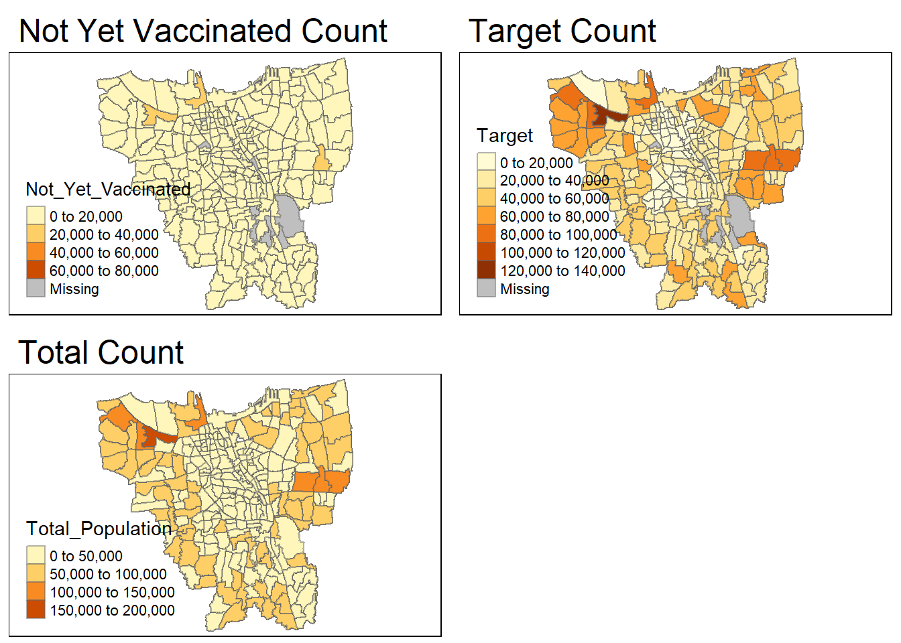

Show the code!
pacman::p_load(sf, sfdep, readxl, plyr, kableExtra, tmap, Kendall, plotly, tidyverse)Since late December 2019, an outbreak of a novel coronavirus disease (COVID-19; previously known as 2019-nCoV) was reported in Wuhan, China, which had subsequently affected 210 countries worldwide. In general, COVID-19 is an acute resolved disease but it can also be deadly, with a 2% case fatality rate.
The COVID-19 vaccination in Indonesia is an ongoing mass immunisation in response to the COVID-19 pandemic in Indonesia. On 13 January 2021, the program commenced when President Joko Widodo was vaccinated at the presidential palace. In terms of total doses given, Indonesia ranks third in Asia and fifth in the world.
According to wikipedia, as of 5 February 2023 at 18:00 WIB (UTC+7), 204,266,655 people had received the first dose of the vaccine and 175,131,893 people had been fully vaccinated; 69,597,474 of them had been inoculated with the booster or the third dose, while 1,585,164 had received the fourth dose. Jakarta has the highest percentage of population fully vaccinated with 103.46%, followed by Bali and Special Region of Yogyakarta with 85.45% and 83.02% respectively.
Despite its compactness, the cumulative vaccination rate are not evenly distributed within DKI Jakarta. The question is where are the sub-districts with relatively higher number of vaccination rate and how they changed over time.
Exploratory Spatial Data Analysis (ESDA) hold tremendous potential to address complex problems facing society. In this study, you are tasked to apply appropriate Local Indicators of Spatial Association (LISA) and Emerging Hot Spot Analysis (EHSA) to undercover the spatio-temporal trends of COVID-19 vaccination in DKI Jakarta.
For the purpose of this assignment, data from Riwayat File Vaksinasi DKI Jakarta will be used. Daily vaccination data are provides. You are only required to download either the first day of the month or last day of the month of the study period.
For the purpose of this study, DKI Jakarta administration boundary 2019 will be used. The data set can be downloaded at Indonesia Geospatial portal, specifically at this page.
pacman::p_load(sf, sfdep, readxl, plyr, kableExtra, tmap, Kendall, plotly, tidyverse)# bd stands for "batas desa", translated as "village boundary"
# reads in geospatial data and stores into bd_jakarta dataframe
bd_jakarta <- st_read(dsn = "data/geospatial",
layer = "BATAS_DESA_DESEMBER_2019_DUKCAPIL_DKI_JAKARTA")Reading layer `BATAS_DESA_DESEMBER_2019_DUKCAPIL_DKI_JAKARTA' from data source
`C:\valtyl\IS415-GAA\Take-home_Ex\Take-home_Ex02\data\geospatial'
using driver `ESRI Shapefile'
Simple feature collection with 269 features and 161 fields
Geometry type: MULTIPOLYGON
Dimension: XY
Bounding box: xmin: 106.3831 ymin: -6.370815 xmax: 106.9728 ymax: -5.184322
Geodetic CRS: WGS 84From the output message, we learn that:
Before visualising our data, we need to check if there are:
These can impact future calculations and representations
Checking for invalid geometries:
# function breakdown:
# the st_is_valid function checks whether a geometry is valid
# which returns the indices of certain values based on logical conditions
# length returns the length of data objects
# checks for the number of geometries that are NOT valid
length(which(st_is_valid(bd_jakarta) == FALSE))[1] 0The message output shows that there are no invalid geometries.
# the rowSums(is.na(bd_jakarta))!=0 checks every row if there are NA values, returning TRUE or FALSE
# the bd_jakarta 'wrapper' prints said rows that contain NA values
bd_jakarta[rowSums(is.na(bd_jakarta))!=0,]Simple feature collection with 2 features and 161 fields
Geometry type: MULTIPOLYGON
Dimension: XY
Bounding box: xmin: 106.8412 ymin: -6.154036 xmax: 106.8612 ymax: -6.144973
Geodetic CRS: WGS 84
OBJECT_ID KODE_DESA DESA KODE PROVINSI KAB_KOTA KECAMATAN
243 25645 31888888 DANAU SUNTER 318888 DKI JAKARTA <NA> <NA>
244 25646 31888888 DANAU SUNTER DLL 318888 DKI JAKARTA <NA> <NA>
DESA_KELUR JUMLAH_PEN JUMLAH_KK LUAS_WILAY KEPADATAN PERPINDAHA JUMLAH_MEN
243 <NA> 0 0 0 0 0 0
244 <NA> 0 0 0 0 0 0
PERUBAHAN WAJIB_KTP SILAM KRISTEN KHATOLIK HINDU BUDHA KONGHUCU KEPERCAYAA
243 0 0 0 0 0 0 0 0 0
244 0 0 0 0 0 0 0 0 0
PRIA WANITA BELUM_KAWI KAWIN CERAI_HIDU CERAI_MATI U0 U5 U10 U15 U20 U25
243 0 0 0 0 0 0 0 0 0 0 0 0
244 0 0 0 0 0 0 0 0 0 0 0 0
U30 U35 U40 U45 U50 U55 U60 U65 U70 U75 TIDAK_BELU BELUM_TAMA TAMAT_SD SLTP
243 0 0 0 0 0 0 0 0 0 0 0 0 0 0
244 0 0 0 0 0 0 0 0 0 0 0 0 0 0
SLTA DIPLOMA_I DIPLOMA_II DIPLOMA_IV STRATA_II STRATA_III BELUM_TIDA
243 0 0 0 0 0 0 0
244 0 0 0 0 0 0 0
APARATUR_P TENAGA_PEN WIRASWASTA PERTANIAN NELAYAN AGAMA_DAN PELAJAR_MA
243 0 0 0 0 0 0 0
244 0 0 0 0 0 0 0
TENAGA_KES PENSIUNAN LAINNYA GENERATED KODE_DES_1 BELUM_ MENGUR_ PELAJAR_
243 0 0 0 <NA> <NA> 0 0 0
244 0 0 0 <NA> <NA> 0 0 0
PENSIUNA_1 PEGAWAI_ TENTARA KEPOLISIAN PERDAG_ PETANI PETERN_ NELAYAN_1
243 0 0 0 0 0 0 0 0
244 0 0 0 0 0 0 0 0
INDUSTR_ KONSTR_ TRANSP_ KARYAW_ KARYAW1 KARYAW1_1 KARYAW1_12 BURUH BURUH_
243 0 0 0 0 0 0 0 0 0
244 0 0 0 0 0 0 0 0 0
BURUH1 BURUH1_1 PEMBANT_ TUKANG TUKANG_1 TUKANG_12 TUKANG__13 TUKANG__14
243 0 0 0 0 0 0 0 0
244 0 0 0 0 0 0 0 0
TUKANG__15 TUKANG__16 TUKANG__17 PENATA PENATA_ PENATA1_1 MEKANIK SENIMAN_
243 0 0 0 0 0 0 0 0
244 0 0 0 0 0 0 0 0
TABIB PARAJI_ PERANCA_ PENTER_ IMAM_M PENDETA PASTOR WARTAWAN USTADZ JURU_M
243 0 0 0 0 0 0 0 0 0 0
244 0 0 0 0 0 0 0 0 0 0
PROMOT ANGGOTA_ ANGGOTA1 ANGGOTA1_1 PRESIDEN WAKIL_PRES ANGGOTA1_2
243 0 0 0 0 0 0 0
244 0 0 0 0 0 0 0
ANGGOTA1_3 DUTA_B GUBERNUR WAKIL_GUBE BUPATI WAKIL_BUPA WALIKOTA WAKIL_WALI
243 0 0 0 0 0 0 0 0
244 0 0 0 0 0 0 0 0
ANGGOTA1_4 ANGGOTA1_5 DOSEN GURU PILOT PENGACARA_ NOTARIS ARSITEK AKUNTA_
243 0 0 0 0 0 0 0 0 0
244 0 0 0 0 0 0 0 0 0
KONSUL_ DOKTER BIDAN PERAWAT APOTEK_ PSIKIATER PENYIA_ PENYIA1 PELAUT
243 0 0 0 0 0 0 0 0 0
244 0 0 0 0 0 0 0 0 0
PENELITI SOPIR PIALAN PARANORMAL PEDAGA_ PERANG_ KEPALA_ BIARAW_ WIRASWAST_
243 0 0 0 0 0 0 0 0 0
244 0 0 0 0 0 0 0 0 0
LAINNYA_12 LUAS_DESA KODE_DES_3 DESA_KEL_1 KODE_12
243 0 0 <NA> <NA> 0
244 0 0 <NA> <NA> 0
geometry
243 MULTIPOLYGON (((106.8612 -6...
244 MULTIPOLYGON (((106.8504 -6...The message output shows that there are 2 rows with missing values for the columns KAB_KOTA (City), KECAMATAN (District), DESA_KELUR (Village) and a few more others. We can also see that there are way too many columns, and we will remove the unnecessary columns later on.
To clean up, we will remove the rows that have NA values in DESA_KELUR since we are interested in the dataset on a sub-district level:
# removes rows that have an NA value in DESA_KELUR
# in context of this data, we can use other columns, such as KAB_KOTA or KECAMATAN
# but since we're looking at this on a sub-district level, DESA_KELUR seemed most appropriate
bd_jakarta <- na.omit(bd_jakarta,c("DESA_KELUR"))Checking the CRS of bd_jakarta:
# retrieves the coordinate system of bd_jakarta
st_crs(bd_jakarta)Coordinate Reference System:
User input: WGS 84
wkt:
GEOGCRS["WGS 84",
DATUM["World Geodetic System 1984",
ELLIPSOID["WGS 84",6378137,298.257223563,
LENGTHUNIT["metre",1]]],
PRIMEM["Greenwich",0,
ANGLEUNIT["degree",0.0174532925199433]],
CS[ellipsoidal,2],
AXIS["latitude",north,
ORDER[1],
ANGLEUNIT["degree",0.0174532925199433]],
AXIS["longitude",east,
ORDER[2],
ANGLEUNIT["degree",0.0174532925199433]],
ID["EPSG",4326]]As mentioned in section 4.2.1, WGS 84 is not appropriate and we should change it to DGN 95:
# transforms the CRS to DGN95, ESPG code 23845
bd_jakarta <- st_transform(bd_jakarta, 23845)Checking if the CRS has been properly assigned:
st_crs(bd_jakarta)Coordinate Reference System:
User input: EPSG:23845
wkt:
PROJCRS["DGN95 / Indonesia TM-3 zone 54.1",
BASEGEOGCRS["DGN95",
DATUM["Datum Geodesi Nasional 1995",
ELLIPSOID["WGS 84",6378137,298.257223563,
LENGTHUNIT["metre",1]]],
PRIMEM["Greenwich",0,
ANGLEUNIT["degree",0.0174532925199433]],
ID["EPSG",4755]],
CONVERSION["Indonesia TM-3 zone 54.1",
METHOD["Transverse Mercator",
ID["EPSG",9807]],
PARAMETER["Latitude of natural origin",0,
ANGLEUNIT["degree",0.0174532925199433],
ID["EPSG",8801]],
PARAMETER["Longitude of natural origin",139.5,
ANGLEUNIT["degree",0.0174532925199433],
ID["EPSG",8802]],
PARAMETER["Scale factor at natural origin",0.9999,
SCALEUNIT["unity",1],
ID["EPSG",8805]],
PARAMETER["False easting",200000,
LENGTHUNIT["metre",1],
ID["EPSG",8806]],
PARAMETER["False northing",1500000,
LENGTHUNIT["metre",1],
ID["EPSG",8807]]],
CS[Cartesian,2],
AXIS["easting (X)",east,
ORDER[1],
LENGTHUNIT["metre",1]],
AXIS["northing (Y)",north,
ORDER[2],
LENGTHUNIT["metre",1]],
USAGE[
SCOPE["Cadastre."],
AREA["Indonesia - onshore east of 138°E."],
BBOX[-9.19,138,-1.49,141.01]],
ID["EPSG",23845]]The transformation is done.
First, we will visualise the geometry of Jakarta:
plot(st_geometry(bd_jakarta))
From the output, it shows that bd_jakarta includes the main land but also many other outer islands that we are not relevant to our analysis in this assignment. (Refer to note in section 3.2)
To remove the outer islands, we should look at how unique values at the City level, KAB_KOTA:
# outputs unique values of the KAB_KOTA field
unique(bd_jakarta$"KAB_KOTA")[1] "JAKARTA BARAT" "JAKARTA PUSAT" "KEPULAUAN SERIBU" "JAKARTA UTARA"
[5] "JAKARTA TIMUR" "JAKARTA SELATAN" From the output, the cities within Jakarta have a JAKARTA prefix, while KEPULAUAN SERIBU (which means ‘Thousand Islands’) refers to the outer islands. Visualising KAB_KOTA will confirm this:
# with bd_jakarta as the input data (setting the 'base')
# draw the KAB_KOTA (city) polygons
# essentially shades the map according to the city divisions
tm_shape(bd_jakarta) +
tm_polygons("KAB_KOTA")
The above visualisation proves that KEPULAUAN SERIBU are the outer islands to remove:
# filters out the outer islands by accepting only if the value of KAB_KOTA is NOT KEPULAUAN SERIBU
bd_jakarta <- filter(bd_jakarta, KAB_KOTA != "KEPULAUAN SERIBU")As seen in section 4.2.2.2, there were many unnecessary and irrelevant columns that we could remove. (Refer to note in section 3.2)
Retaining the relevant fields (first 9 fields) for our analysis:
# filters out other fields by accepting only the first 9 fields
bd_jakarta <- bd_jakarta[, 0:9]For ease of comprehension:
# with reference to: https://www.codegrepper.com/code-examples/r/rename+column+name+in+r
# renames the columns in the style New_Name = OLD_NAME
bd_jakarta <- bd_jakarta %>%
dplyr::rename(
Object_ID=OBJECT_ID,
Province=PROVINSI,
City=KAB_KOTA,
District=KECAMATAN,
Village_Code=KODE_DESA,
Village=DESA,
Sub_District=DESA_KELUR,
Code=KODE,
Total_Population=JUMLAH_PEN
)Summary of bd_jakarta:
# reveals the data type of all fields + some values
glimpse(bd_jakarta)Rows: 261
Columns: 10
$ Object_ID <dbl> 25477, 25478, 25397, 25400, 25390, 25391, 25394, 2538…
$ Village_Code <chr> "3173031006", "3173031007", "3171031003", "3171031006…
$ Village <chr> "KEAGUNGAN", "GLODOK", "HARAPAN MULIA", "CEMPAKA BARU…
$ Code <dbl> 317303, 317303, 317103, 317103, 317102, 317102, 31710…
$ Province <chr> "DKI JAKARTA", "DKI JAKARTA", "DKI JAKARTA", "DKI JAK…
$ City <chr> "JAKARTA BARAT", "JAKARTA BARAT", "JAKARTA PUSAT", "J…
$ District <chr> "TAMAN SARI", "TAMAN SARI", "KEMAYORAN", "KEMAYORAN",…
$ Sub_District <chr> "KEAGUNGAN", "GLODOK", "HARAPAN MULIA", "CEMPAKA BARU…
$ Total_Population <dbl> 21609, 9069, 29085, 41913, 15793, 33383, 35906, 21828…
$ geometry <MULTIPOLYGON [m]> MULTIPOLYGON (((-3626874 69..., MULTIPOL…Number of unique sub-districts:
length(unique(bd_jakarta$"Sub_District"))[1] 261Number of unique districts:
length(unique(bd_jakarta$"District"))[1] 42Number of unique cities:
length(unique(bd_jakarta$"City"))[1] 5There are 261 unique sub-districts, 42 unique districts and 5 unique cities. The maximum number of categories for mapping with tmap is 30. Even though max.categories can be adjusted in tmap_options, too many segmented sections on a single map will not provide much insights hence we should do the EDA at ‘City’ level:
# shades the map according to the city divisions
tm_shape(bd_jakarta) +
tm_polygons("City")
For the aspatial data, I have decided to download the data for last day of every month from July 2021 to June 2022. However, the last day of Feb 2022 provided on the website in section 3.1 is 27 Feb instead of 28 Feb.
This section is to check for any discrepancies in each .xlsx file in the ‘data/aspatial’ folder by performing EDA:
jul2021 <- read_xlsx("data/aspatial/Data Vaksinasi Berbasis Kelurahan (31 Juli 2021).xlsx")
glimpse(jul2021)Rows: 268
Columns: 27
$ `KODE KELURAHAN` <chr> NA, "3172051003", "317304…
$ `WILAYAH KOTA` <chr> NA, "JAKARTA UTARA", "JAK…
$ KECAMATAN <chr> NA, "PADEMANGAN", "TAMBOR…
$ KELURAHAN <chr> "TOTAL", "ANCOL", "ANGKE"…
$ SASARAN <dbl> 8941211, 23947, 29381, 29…
$ `BELUM VAKSIN` <dbl> 4441501, 12333, 13875, 18…
$ `JUMLAH\r\nDOSIS 1` <dbl> 4499710, 11614, 15506, 10…
$ `JUMLAH\r\nDOSIS 2` <dbl> 1663218, 4181, 4798, 3658…
$ `TOTAL VAKSIN\r\nDIBERIKAN` <dbl> 6162928, 15795, 20304, 14…
$ `LANSIA\r\nDOSIS 1` <dbl> 502579, 1230, 2012, 865, …
$ `LANSIA\r\nDOSIS 2` <dbl> 440910, 1069, 1729, 701, …
$ `LANSIA TOTAL \r\nVAKSIN DIBERIKAN` <dbl> 943489, 2299, 3741, 1566,…
$ `PELAYAN PUBLIK\r\nDOSIS 1` <dbl> 1052883, 3333, 2586, 2837…
$ `PELAYAN PUBLIK\r\nDOSIS 2` <dbl> 666009, 2158, 1374, 1761,…
$ `PELAYAN PUBLIK TOTAL\r\nVAKSIN DIBERIKAN` <dbl> 1718892, 5491, 3960, 4598…
$ `GOTONG ROYONG\r\nDOSIS 1` <dbl> 56660, 78, 122, 174, 71, …
$ `GOTONG ROYONG\r\nDOSIS 2` <dbl> 38496, 51, 84, 106, 57, 7…
$ `GOTONG ROYONG TOTAL\r\nVAKSIN DIBERIKAN` <dbl> 95156, 129, 206, 280, 128…
$ `TENAGA KESEHATAN\r\nDOSIS 1` <dbl> 76397, 101, 90, 215, 73, …
$ `TENAGA KESEHATAN\r\nDOSIS 2` <dbl> 67484, 91, 82, 192, 67, 3…
$ `TENAGA KESEHATAN TOTAL\r\nVAKSIN DIBERIKAN` <dbl> 143881, 192, 172, 407, 14…
$ `TAHAPAN 3\r\nDOSIS 1` <dbl> 2279398, 5506, 9012, 5408…
$ `TAHAPAN 3\r\nDOSIS 2` <dbl> 446028, 789, 1519, 897, 4…
$ `TAHAPAN 3 TOTAL\r\nVAKSIN DIBERIKAN` <dbl> 2725426, 6295, 10531, 630…
$ `REMAJA\r\nDOSIS 1` <dbl> 531793, 1366, 1684, 1261,…
$ `REMAJA\r\nDOSIS 2` <dbl> 4291, 23, 10, 1, 1, 8, 6,…
$ `REMAJA TOTAL\r\nVAKSIN DIBERIKAN` <dbl> 536084, 1389, 1694, 1262,…The above output shows that there are no duplicates for the columns.
Below, similar codes were used to check for the other excel files. There are no duplicates in the rest of the files. Doing a quick comparison, we can notice that the excel files for July 2021 to February 2022 have 27 columns while those for March 2022 to June 2022 have 34 columns.
aug2021 <- read_xlsx("data/aspatial/Data Vaksinasi Berbasis Kelurahan (31 Agustus 2021).xlsx")
glimpse(aug2021)Rows: 268
Columns: 27
$ `KODE KELURAHAN` <chr> NA, "3172051003", "317304…
$ `WILAYAH KOTA` <chr> NA, "JAKARTA UTARA", "JAK…
$ KECAMATAN <chr> NA, "PADEMANGAN", "TAMBOR…
$ KELURAHAN <chr> "TOTAL", "ANCOL", "ANGKE"…
$ SASARAN <dbl> 8941211, 23947, 29381, 29…
$ `BELUM VAKSIN` <dbl> 3277484, 9191, 10400, 125…
$ `JUMLAH\r\nDOSIS 1` <dbl> 5663727, 14756, 18981, 16…
$ `JUMLAH\r\nDOSIS 2` <dbl> 3412906, 8935, 10470, 776…
$ `TOTAL VAKSIN\r\nDIBERIKAN` <dbl> 9076633, 23691, 29451, 24…
$ `LANSIA\r\nDOSIS 1` <dbl> 535001, 1300, 2104, 1043,…
$ `LANSIA\r\nDOSIS 2` <dbl> 468678, 1140, 1849, 780, …
$ `LANSIA TOTAL \r\nVAKSIN DIBERIKAN` <dbl> 1003679, 2440, 3953, 1823…
$ `PELAYAN PUBLIK\r\nDOSIS 1` <dbl> 1393352, 4194, 3643, 4293…
$ `PELAYAN PUBLIK\r\nDOSIS 2` <dbl> 1007921, 3135, 2519, 2548…
$ `PELAYAN PUBLIK TOTAL\r\nVAKSIN DIBERIKAN` <dbl> 2401273, 7329, 6162, 6841…
$ `GOTONG ROYONG\r\nDOSIS 1` <dbl> 65340, 89, 137, 188, 80, …
$ `GOTONG ROYONG\r\nDOSIS 2` <dbl> 53995, 77, 119, 163, 71, …
$ `GOTONG ROYONG TOTAL\r\nVAKSIN DIBERIKAN` <dbl> 119335, 166, 256, 351, 15…
$ `TENAGA KESEHATAN\r\nDOSIS 1` <dbl> 79502, 106, 92, 229, 78, …
$ `TENAGA KESEHATAN\r\nDOSIS 2` <dbl> 72588, 96, 83, 203, 74, 3…
$ `TENAGA KESEHATAN TOTAL\r\nVAKSIN DIBERIKAN` <dbl> 152090, 202, 175, 432, 15…
$ `TAHAPAN 3\r\nDOSIS 1` <dbl> 2941837, 7385, 11033, 872…
$ `TAHAPAN 3\r\nDOSIS 2` <dbl> 1377349, 3277, 4541, 3010…
$ `TAHAPAN 3 TOTAL\r\nVAKSIN DIBERIKAN` <dbl> 4319186, 10662, 15574, 11…
$ `REMAJA\r\nDOSIS 1` <dbl> 648695, 1682, 1972, 2090,…
$ `REMAJA\r\nDOSIS 2` <dbl> 432375, 1210, 1359, 1062,…
$ `REMAJA TOTAL\r\nVAKSIN DIBERIKAN` <dbl> 1081070, 2892, 3331, 3152…sep2021 <- read_xlsx("data/aspatial/Data Vaksinasi Berbasis Kelurahan (30 September 2021).xlsx")
glimpse(sep2021)Rows: 268
Columns: 27
$ `KODE KELURAHAN` <chr> NA, "3172051003", "317304…
$ `WILAYAH KOTA` <chr> NA, "JAKARTA UTARA", "JAK…
$ KECAMATAN <chr> NA, "PADEMANGAN", "TAMBOR…
$ KELURAHAN <chr> "TOTAL", "ANCOL", "ANGKE"…
$ SASARAN <dbl> 8941211, 23947, 29381, 29…
$ `BELUM VAKSIN` <dbl> 2235772, 6688, 7581, 8708…
$ `JUMLAH\r\nDOSIS 1` <dbl> 6705439, 17259, 21800, 20…
$ `JUMLAH\r\nDOSIS 2` <dbl> 5171697, 13376, 16438, 14…
$ `TOTAL VAKSIN\r\nDIBERIKAN` <dbl> 11877136, 30635, 38238, 3…
$ `LANSIA\r\nDOSIS 1` <dbl> 587215, 1417, 2270, 1263,…
$ `LANSIA\r\nDOSIS 2` <dbl> 518944, 1263, 2033, 988, …
$ `LANSIA TOTAL \r\nVAKSIN DIBERIKAN` <dbl> 1106159, 2680, 4303, 2251…
$ `PELAYAN PUBLIK\r\nDOSIS 1` <dbl> 1468382, 3938, 3883, 4540…
$ `PELAYAN PUBLIK\r\nDOSIS 2` <dbl> 1305200, 3454, 3356, 3903…
$ `PELAYAN PUBLIK TOTAL\r\nVAKSIN DIBERIKAN` <dbl> 2773582, 7392, 7239, 8443…
$ `GOTONG ROYONG\r\nDOSIS 1` <dbl> 84049, 158, 173, 248, 100…
$ `GOTONG ROYONG\r\nDOSIS 2` <dbl> 75657, 148, 157, 229, 91,…
$ `GOTONG ROYONG TOTAL\r\nVAKSIN DIBERIKAN` <dbl> 159706, 306, 330, 477, 19…
$ `TENAGA KESEHATAN\r\nDOSIS 1` <dbl> 112296, 140, 135, 329, 11…
$ `TENAGA KESEHATAN\r\nDOSIS 2` <dbl> 104381, 124, 125, 300, 11…
$ `TENAGA KESEHATAN TOTAL\r\nVAKSIN DIBERIKAN` <dbl> 216677, 264, 260, 629, 23…
$ `TAHAPAN 3\r\nDOSIS 1` <dbl> 3677943, 9564, 12969, 114…
$ `TAHAPAN 3\r\nDOSIS 2` <dbl> 2548057, 6788, 8944, 7023…
$ `TAHAPAN 3 TOTAL\r\nVAKSIN DIBERIKAN` <dbl> 6226000, 16352, 21913, 18…
$ `REMAJA\r\nDOSIS 1` <dbl> 775554, 2042, 2370, 2510,…
$ `REMAJA\r\nDOSIS 2` <dbl> 619458, 1599, 1823, 1969,…
$ `REMAJA TOTAL\r\nVAKSIN DIBERIKAN` <dbl> 1395012, 3641, 4193, 4479…oct2021 <- read_xlsx("data/aspatial/Data Vaksinasi Berbasis Kelurahan (31 Oktober 2021).xlsx")
glimpse(oct2021)Rows: 268
Columns: 27
$ `KODE KELURAHAN` <chr> NA, "3172051003", "317304…
$ `WILAYAH KOTA` <chr> NA, "JAKARTA UTARA", "JAK…
$ KECAMATAN <chr> NA, "PADEMANGAN", "TAMBOR…
$ KELURAHAN <chr> "TOTAL", "ANCOL", "ANGKE"…
$ SASARAN <dbl> 8941211, 23947, 29381, 29…
$ `BELUM VAKSIN` <dbl> 1880524, 5991, 6557, 7586…
$ `JUMLAH\r\nDOSIS 1` <dbl> 7060687, 17956, 22824, 21…
$ `JUMLAH\r\nDOSIS 2` <dbl> 5729001, 14504, 18185, 16…
$ `TOTAL VAKSIN\r\nDIBERIKAN` <dbl> 12789688, 32460, 41009, 3…
$ `LANSIA\r\nDOSIS 1` <dbl> 608940, 1447, 2336, 1322,…
$ `LANSIA\r\nDOSIS 2` <dbl> 543483, 1296, 2104, 1104,…
$ `LANSIA TOTAL \r\nVAKSIN DIBERIKAN` <dbl> 1152423, 2743, 4440, 2426…
$ `PELAYAN PUBLIK\r\nDOSIS 1` <dbl> 1484292, 3972, 3917, 4595…
$ `PELAYAN PUBLIK\r\nDOSIS 2` <dbl> 1349105, 3555, 3465, 4072…
$ `PELAYAN PUBLIK TOTAL\r\nVAKSIN DIBERIKAN` <dbl> 2833397, 7527, 7382, 8667…
$ `GOTONG ROYONG\r\nDOSIS 1` <dbl> 86323, 165, 175, 259, 101…
$ `GOTONG ROYONG\r\nDOSIS 2` <dbl> 81721, 160, 168, 245, 96,…
$ `GOTONG ROYONG TOTAL\r\nVAKSIN DIBERIKAN` <dbl> 168044, 325, 343, 504, 19…
$ `TENAGA KESEHATAN\r\nDOSIS 1` <dbl> 113911, 140, 136, 338, 12…
$ `TENAGA KESEHATAN\r\nDOSIS 2` <dbl> 107383, 128, 128, 310, 12…
$ `TENAGA KESEHATAN TOTAL\r\nVAKSIN DIBERIKAN` <dbl> 221294, 268, 264, 648, 24…
$ `TAHAPAN 3\r\nDOSIS 1` <dbl> 3948804, 10101, 13744, 12…
$ `TAHAPAN 3\r\nDOSIS 2` <dbl> 2949023, 7567, 10266, 849…
$ `TAHAPAN 3 TOTAL\r\nVAKSIN DIBERIKAN` <dbl> 6897827, 17668, 24010, 20…
$ `REMAJA\r\nDOSIS 1` <dbl> 818417, 2131, 2516, 2672,…
$ `REMAJA\r\nDOSIS 2` <dbl> 698286, 1798, 2054, 2220,…
$ `REMAJA TOTAL\r\nVAKSIN DIBERIKAN` <dbl> 1516703, 3929, 4570, 4892…nov2021 <- read_xlsx("data/aspatial/Data Vaksinasi Berbasis Kelurahan (30 November 2021).xlsx")
glimpse(nov2021)Rows: 268
Columns: 27
$ `KODE KELURAHAN` <chr> NA, "3172051003", "317304…
$ `WILAYAH KOTA` <chr> NA, "JAKARTA UTARA", "JAK…
$ KECAMATAN <chr> NA, "PADEMANGAN", "TAMBOR…
$ KELURAHAN <chr> "TOTAL", "ANCOL", "ANGKE"…
$ SASARAN <dbl> 8941211, 23947, 29381, 29…
$ `BELUM VAKSIN` <dbl> 1723821, 5527, 5986, 6802…
$ `JUMLAH\r\nDOSIS 1` <dbl> 7217390, 18420, 23395, 22…
$ `JUMLAH\r\nDOSIS 2` <dbl> 6172636, 15466, 19404, 18…
$ `TOTAL VAKSIN\r\nDIBERIKAN` <dbl> 13390026, 33886, 42799, 4…
$ `LANSIA\r\nDOSIS 1` <dbl> 624751, 1473, 2391, 1385,…
$ `LANSIA\r\nDOSIS 2` <dbl> 571830, 1351, 2192, 1224,…
$ `LANSIA TOTAL \r\nVAKSIN DIBERIKAN` <dbl> 1196581, 2824, 4583, 2609…
$ `PELAYAN PUBLIK\r\nDOSIS 1` <dbl> 1487961, 3980, 3926, 4614…
$ `PELAYAN PUBLIK\r\nDOSIS 2` <dbl> 1369705, 3601, 3516, 4146…
$ `PELAYAN PUBLIK TOTAL\r\nVAKSIN DIBERIKAN` <dbl> 2857666, 7581, 7442, 8760…
$ `GOTONG ROYONG\r\nDOSIS 1` <dbl> 86710, 169, 176, 259, 101…
$ `GOTONG ROYONG\r\nDOSIS 2` <dbl> 83506, 163, 172, 252, 98,…
$ `GOTONG ROYONG TOTAL\r\nVAKSIN DIBERIKAN` <dbl> 170216, 332, 348, 511, 19…
$ `TENAGA KESEHATAN\r\nDOSIS 1` <dbl> 114292, 140, 135, 341, 12…
$ `TENAGA KESEHATAN\r\nDOSIS 2` <dbl> 109221, 128, 128, 323, 12…
$ `TENAGA KESEHATAN TOTAL\r\nVAKSIN DIBERIKAN` <dbl> 223513, 268, 263, 664, 24…
$ `TAHAPAN 3\r\nDOSIS 1` <dbl> 4069550, 10473, 14182, 12…
$ `TAHAPAN 3\r\nDOSIS 2` <dbl> 3304266, 8329, 11215, 978…
$ `TAHAPAN 3 TOTAL\r\nVAKSIN DIBERIKAN` <dbl> 7373816, 18802, 25397, 22…
$ `REMAJA\r\nDOSIS 1` <dbl> 834126, 2185, 2585, 2733,…
$ `REMAJA\r\nDOSIS 2` <dbl> 734108, 1894, 2181, 2355,…
$ `REMAJA TOTAL\r\nVAKSIN DIBERIKAN` <dbl> 1568234, 4079, 4766, 5088…dec2021 <- read_xlsx("data/aspatial/Data Vaksinasi Berbasis Kelurahan (31 Desember 2021).xlsx")
glimpse(dec2021)Rows: 268
Columns: 27
$ `KODE KELURAHAN` <chr> NA, "3172051003", "317304…
$ `WILAYAH KOTA` <chr> NA, "JAKARTA UTARA", "JAK…
$ KECAMATAN <chr> NA, "PADEMANGAN", "TAMBOR…
$ KELURAHAN <chr> "TOTAL", "ANCOL", "ANGKE"…
$ SASARAN <dbl> 8941211, 23947, 29381, 29…
$ `BELUM VAKSIN` <dbl> 1623736, 5062, 5626, 6335…
$ `JUMLAH\r\nDOSIS 1` <dbl> 7317475, 18885, 23755, 22…
$ `JUMLAH\r\nDOSIS 2` <dbl> 6370175, 15996, 20026, 18…
$ `TOTAL VAKSIN\r\nDIBERIKAN` <dbl> 13687650, 34881, 43781, 4…
$ `LANSIA\r\nDOSIS 1` <dbl> 634516, 1520, 2427, 1418,…
$ `LANSIA\r\nDOSIS 2` <dbl> 586624, 1375, 2247, 1294,…
$ `LANSIA TOTAL \r\nVAKSIN DIBERIKAN` <dbl> 1221140, 2895, 4674, 2712…
$ `PELAYAN PUBLIK\r\nDOSIS 1` <dbl> 1485857, 3981, 3922, 4603…
$ `PELAYAN PUBLIK\r\nDOSIS 2` <dbl> 1372180, 3607, 3521, 4153…
$ `PELAYAN PUBLIK TOTAL\r\nVAKSIN DIBERIKAN` <dbl> 2858037, 7588, 7443, 8756…
$ `GOTONG ROYONG\r\nDOSIS 1` <dbl> 86905, 169, 176, 260, 101…
$ `GOTONG ROYONG\r\nDOSIS 2` <dbl> 83995, 164, 174, 253, 99,…
$ `GOTONG ROYONG TOTAL\r\nVAKSIN DIBERIKAN` <dbl> 170900, 333, 350, 513, 20…
$ `TENAGA KESEHATAN\r\nDOSIS 1` <dbl> 114612, 140, 136, 345, 12…
$ `TENAGA KESEHATAN\r\nDOSIS 2` <dbl> 110119, 128, 129, 327, 12…
$ `TENAGA KESEHATAN TOTAL\r\nVAKSIN DIBERIKAN` <dbl> 224731, 268, 265, 672, 24…
$ `TAHAPAN 3\r\nDOSIS 1` <dbl> 4150113, 10841, 14450, 13…
$ `TAHAPAN 3\r\nDOSIS 2` <dbl> 3467714, 8782, 11715, 104…
$ `TAHAPAN 3 TOTAL\r\nVAKSIN DIBERIKAN` <dbl> 7617827, 19623, 26165, 23…
$ `REMAJA\r\nDOSIS 1` <dbl> 845472, 2234, 2644, 2783,…
$ `REMAJA\r\nDOSIS 2` <dbl> 749543, 1940, 2240, 2401,…
$ `REMAJA TOTAL\r\nVAKSIN DIBERIKAN` <dbl> 1595015, 4174, 4884, 5184…jan2022 <- read_xlsx("data/aspatial/Data Vaksinasi Berbasis Kelurahan (31 Januari 2022).xlsx")
glimpse(jan2022)Rows: 268
Columns: 27
$ `KODE KELURAHAN` <chr> NA, "3172051003", "317304…
$ `WILAYAH KOTA` <chr> NA, "JAKARTA UTARA", "JAK…
$ KECAMATAN <chr> NA, "PADEMANGAN", "TAMBOR…
$ KELURAHAN <chr> "TOTAL", "ANCOL", "ANGKE"…
$ SASARAN <dbl> 8941211, 23947, 29381, 29…
$ `BELUM VAKSIN` <dbl> 1538221, 4647, 5388, 5967…
$ `JUMLAH\r\nDOSIS 1` <dbl> 7402990, 19300, 23993, 23…
$ `JUMLAH\r\nDOSIS 2` <dbl> 6516678, 16477, 20463, 19…
$ `TOTAL VAKSIN\r\nDIBERIKAN` <dbl> 13919668, 35777, 44456, 4…
$ `LANSIA\r\nDOSIS 1` <dbl> 644280, 1564, 2459, 1446,…
$ `LANSIA\r\nDOSIS 2` <dbl> 598309, 1399, 2291, 1327,…
$ `LANSIA TOTAL \r\nVAKSIN DIBERIKAN` <dbl> 1242589, 2963, 4750, 2773…
$ `PELAYAN PUBLIK\r\nDOSIS 1` <dbl> 1478564, 3971, 3900, 4592…
$ `PELAYAN PUBLIK\r\nDOSIS 2` <dbl> 1369268, 3604, 3506, 4158…
$ `PELAYAN PUBLIK TOTAL\r\nVAKSIN DIBERIKAN` <dbl> 2847832, 7575, 7406, 8750…
$ `GOTONG ROYONG\r\nDOSIS 1` <dbl> 88073, 177, 178, 262, 102…
$ `GOTONG ROYONG\r\nDOSIS 2` <dbl> 85942, 171, 179, 260, 99,…
$ `GOTONG ROYONG TOTAL\r\nVAKSIN DIBERIKAN` <dbl> 174015, 348, 357, 522, 20…
$ `TENAGA KESEHATAN\r\nDOSIS 1` <dbl> 115123, 140, 135, 348, 12…
$ `TENAGA KESEHATAN\r\nDOSIS 2` <dbl> 111364, 130, 130, 331, 12…
$ `TENAGA KESEHATAN TOTAL\r\nVAKSIN DIBERIKAN` <dbl> 226487, 270, 265, 679, 24…
$ `TAHAPAN 3\r\nDOSIS 1` <dbl> 4215232, 11158, 14620, 13…
$ `TAHAPAN 3\r\nDOSIS 2` <dbl> 3579348, 9173, 12024, 109…
$ `TAHAPAN 3 TOTAL\r\nVAKSIN DIBERIKAN` <dbl> 7794580, 20331, 26644, 24…
$ `REMAJA\r\nDOSIS 1` <dbl> 861718, 2290, 2701, 2840,…
$ `REMAJA\r\nDOSIS 2` <dbl> 772447, 2000, 2333, 2488,…
$ `REMAJA TOTAL\r\nVAKSIN DIBERIKAN` <dbl> 1634165, 4290, 5034, 5328…feb2022 <- read_xlsx("data/aspatial/Data Vaksinasi Berbasis Kelurahan (27 Februari 2022).xlsx")
glimpse(feb2022)Rows: 268
Columns: 27
$ `KODE KELURAHAN` <chr> NA, "3172051003", "317304…
$ `WILAYAH KOTA` <chr> NA, "JAKARTA UTARA", "JAK…
$ KECAMATAN <chr> NA, "PADEMANGAN", "TAMBOR…
$ KELURAHAN <chr> "TOTAL", "ANCOL", "ANGKE"…
$ SASARAN <dbl> 8941211, 23947, 29381, 29…
$ `BELUM VAKSIN` <dbl> 1517196, 4592, 5319, 5903…
$ `JUMLAH\r\nDOSIS 1` <dbl> 7424015, 19355, 24062, 23…
$ `JUMLAH\r\nDOSIS 2` <dbl> 6590380, 16687, 20738, 19…
$ `TOTAL VAKSIN\r\nDIBERIKAN` <dbl> 14014395, 36042, 44800, 4…
$ `LANSIA\r\nDOSIS 1` <dbl> 646481, 1567, 2465, 1451,…
$ `LANSIA\r\nDOSIS 2` <dbl> 604751, 1418, 2336, 1348,…
$ `LANSIA TOTAL \r\nVAKSIN DIBERIKAN` <dbl> 1251232, 2985, 4801, 2799…
$ `PELAYAN PUBLIK\r\nDOSIS 1` <dbl> 1478545, 3971, 3899, 4590…
$ `PELAYAN PUBLIK\r\nDOSIS 2` <dbl> 1371190, 3614, 3512, 4161…
$ `PELAYAN PUBLIK TOTAL\r\nVAKSIN DIBERIKAN` <dbl> 2849735, 7585, 7411, 8751…
$ `GOTONG ROYONG\r\nDOSIS 1` <dbl> 88088, 178, 178, 262, 102…
$ `GOTONG ROYONG\r\nDOSIS 2` <dbl> 86046, 171, 179, 260, 99,…
$ `GOTONG ROYONG TOTAL\r\nVAKSIN DIBERIKAN` <dbl> 174134, 349, 357, 522, 20…
$ `TENAGA KESEHATAN\r\nDOSIS 1` <dbl> 115186, 140, 135, 348, 12…
$ `TENAGA KESEHATAN\r\nDOSIS 2` <dbl> 111623, 130, 130, 331, 12…
$ `TENAGA KESEHATAN TOTAL\r\nVAKSIN DIBERIKAN` <dbl> 226809, 270, 265, 679, 24…
$ `TAHAPAN 3\r\nDOSIS 1` <dbl> 4232389, 11200, 14670, 13…
$ `TAHAPAN 3\r\nDOSIS 2` <dbl> 3638187, 9327, 12227, 111…
$ `TAHAPAN 3 TOTAL\r\nVAKSIN DIBERIKAN` <dbl> 7870576, 20527, 26897, 24…
$ `REMAJA\r\nDOSIS 1` <dbl> 863326, 2299, 2715, 2845,…
$ `REMAJA\r\nDOSIS 2` <dbl> 778583, 2027, 2354, 2512,…
$ `REMAJA TOTAL\r\nVAKSIN DIBERIKAN` <dbl> 1641909, 4326, 5069, 5357…mar2022 <- read_xlsx("data/aspatial/Data Vaksinasi Berbasis Kelurahan (31 Maret 2022).xlsx")
glimpse(mar2022)Rows: 268
Columns: 34
$ `KODE KELURAHAN` <chr> NA, "3172051003", "317304…
$ `WILAYAH KOTA` <chr> NA, "JAKARTA UTARA", "JAK…
$ KECAMATAN <chr> NA, "PADEMANGAN", "TAMBOR…
$ KELURAHAN <chr> "TOTAL", "ANCOL", "ANGKE"…
$ SASARAN <dbl> 8941211, 23947, 29381, 29…
$ `BELUM VAKSIN` <dbl> 1482471, 4522, 5186, 5780…
$ `JUMLAH\r\nDOSIS 1` <dbl> 7458740, 19425, 24195, 23…
$ `JUMLAH\r\nDOSIS 2` <dbl> 6682911, 16909, 21000, 20…
$ `JUMLAH\r\nDOSIS 3` <dbl> 1836511, 3934, 6122, 4124…
$ `TOTAL VAKSIN\r\nDIBERIKAN` <dbl> 15978162, 40268, 51317, 4…
$ `LANSIA\r\nDOSIS 1` <dbl> 649601, 1574, 2475, 1457,…
$ `LANSIA\r\nDOSIS 2` <dbl> 610754, 1433, 2350, 1366,…
$ `LANSIA\r\nDOSIS 3` <dbl> 610754, 1433, 2350, 1366,…
$ `LANSIA TOTAL \r\nVAKSIN DIBERIKAN` <dbl> 1533150, 3545, 6052, 3283…
$ `PELAYAN PUBLIK\r\nDOSIS 1` <dbl> 1481237, 3980, 3910, 4604…
$ `PELAYAN PUBLIK\r\nDOSIS 2` <dbl> 1375686, 3634, 3523, 4175…
$ `PELAYAN PUBLIK\r\nDOSIS 3` <dbl> 200536, 579, 660, 453, 24…
$ `PELAYAN PUBLIK TOTAL\r\nVAKSIN DIBERIKAN` <dbl> 3057459, 8193, 8093, 9232…
$ `GOTONG ROYONG\r\nDOSIS 1` <dbl> 88150, 178, 178, 262, 102…
$ `GOTONG ROYONG\r\nDOSIS 2` <dbl> 86122, 173, 179, 260, 99,…
$ `GOTONG ROYONG\r\nDOSIS 3` <dbl> 19460, 22, 53, 57, 19, 41…
$ `GOTONG ROYONG TOTAL\r\nVAKSIN DIBERIKAN` <dbl> 193732, 373, 410, 579, 22…
$ `TENAGA KESEHATAN\r\nDOSIS 1` <dbl> 115527, 140, 135, 348, 12…
$ `TENAGA KESEHATAN\r\nDOSIS 2` <dbl> 112027, 130, 130, 331, 12…
$ `TENAGA KESEHATAN\r\nDOSIS 3` <dbl> 84640, 103, 94, 239, 83, …
$ `TENAGA KESEHATAN TOTAL\r\nVAKSIN DIBERIKAN` <dbl> 312194, 373, 359, 918, 32…
$ `TAHAPAN 3\r\nDOSIS 1` <dbl> 4258776, 11250, 14773, 13…
$ `TAHAPAN 3\r\nDOSIS 2` <dbl> 3715052, 9502, 12436, 114…
$ `TAHAPAN 3\r\nDOSIS 3` <dbl> 1248211, 2671, 4048, 2891…
$ `TAHAPAN 3 TOTAL\r\nVAKSIN DIBERIKAN` <dbl> 9222039, 23423, 31257, 28…
$ `REMAJA\r\nDOSIS 1` <dbl> 865449, 2303, 2724, 2851,…
$ `REMAJA\r\nDOSIS 2` <dbl> 783270, 2037, 2382, 2541,…
$ `REMAJA\r\nDOSIS 3` <dbl> 10869, 21, 40, 24, 7, 28,…
$ `REMAJA TOTAL\r\nVAKSIN DIBERIKAN` <dbl> 1659588, 4361, 5146, 5416…apr2022 <- read_xlsx("data/aspatial/Data Vaksinasi Berbasis Kelurahan (30 April 2022).xlsx")
glimpse(apr2022)Rows: 268
Columns: 34
$ `KODE KELURAHAN` <chr> NA, "3172051003", "317304…
$ `WILAYAH KOTA` <chr> NA, "JAKARTA UTARA", "JAK…
$ KECAMATAN <chr> NA, "PADEMANGAN", "TAMBOR…
$ KELURAHAN <chr> "TOTAL", "ANCOL", "ANGKE"…
$ SASARAN <dbl> 8941211, 23947, 29381, 29…
$ `BELUM VAKSIN` <dbl> 1453423, 4449, 5101, 5699…
$ `JUMLAH\r\nDOSIS 1` <dbl> 7487788, 19498, 24280, 23…
$ `JUMLAH\r\nDOSIS 2` <dbl> 6727002, 17027, 21134, 20…
$ `JUMLAH\r\nDOSIS 3` <dbl> 2720796, 6568, 8915, 6491…
$ `TOTAL VAKSIN\r\nDIBERIKAN` <dbl> 16935586, 43093, 54329, 5…
$ `LANSIA\r\nDOSIS 1` <dbl> 651696, 1579, 2481, 1458,…
$ `LANSIA\r\nDOSIS 2` <dbl> 613044, 1441, 2360, 1376,…
$ `LANSIA\r\nDOSIS 3` <dbl> 613044, 1441, 2360, 1376,…
$ `LANSIA TOTAL \r\nVAKSIN DIBERIKAN` <dbl> 1599248, 3750, 6301, 3425…
$ `PELAYAN PUBLIK\r\nDOSIS 1` <dbl> 1483630, 3983, 3920, 4611…
$ `PELAYAN PUBLIK\r\nDOSIS 2` <dbl> 1378338, 3640, 3529, 4187…
$ `PELAYAN PUBLIK\r\nDOSIS 3` <dbl> 366145, 1099, 1096, 941, …
$ `PELAYAN PUBLIK TOTAL\r\nVAKSIN DIBERIKAN` <dbl> 3228113, 8722, 8545, 9739…
$ `GOTONG ROYONG\r\nDOSIS 1` <dbl> 88200, 178, 178, 262, 102…
$ `GOTONG ROYONG\r\nDOSIS 2` <dbl> 86184, 173, 179, 260, 99,…
$ `GOTONG ROYONG\r\nDOSIS 3` <dbl> 38179, 71, 95, 120, 41, 7…
$ `GOTONG ROYONG TOTAL\r\nVAKSIN DIBERIKAN` <dbl> 212563, 422, 452, 642, 24…
$ `TENAGA KESEHATAN\r\nDOSIS 1` <dbl> 115623, 140, 135, 348, 12…
$ `TENAGA KESEHATAN\r\nDOSIS 2` <dbl> 112253, 130, 130, 333, 12…
$ `TENAGA KESEHATAN\r\nDOSIS 3` <dbl> 89811, 109, 105, 259, 91,…
$ `TENAGA KESEHATAN TOTAL\r\nVAKSIN DIBERIKAN` <dbl> 317687, 379, 370, 940, 33…
$ `TAHAPAN 3\r\nDOSIS 1` <dbl> 4281576, 11308, 14842, 13…
$ `TAHAPAN 3\r\nDOSIS 2` <dbl> 3750893, 9596, 12545, 116…
$ `TAHAPAN 3\r\nDOSIS 3` <dbl> 1866526, 4503, 6084, 4519…
$ `TAHAPAN 3 TOTAL\r\nVAKSIN DIBERIKAN` <dbl> 9898995, 25407, 33471, 29…
$ `REMAJA\r\nDOSIS 1` <dbl> 867063, 2310, 2724, 2858,…
$ `REMAJA\r\nDOSIS 2` <dbl> 786290, 2047, 2391, 2557,…
$ `REMAJA\r\nDOSIS 3` <dbl> 25627, 56, 75, 61, 19, 71…
$ `REMAJA TOTAL\r\nVAKSIN DIBERIKAN` <dbl> 1678980, 4413, 5190, 5476…may2022 <- read_xlsx("data/aspatial/Data Vaksinasi Berbasis Kelurahan (31 Mei 2022).xlsx")
glimpse(may2022)Rows: 268
Columns: 34
$ `KODE KELURAHAN` <chr> NA, "3172051003", "317304…
$ `WILAYAH KOTA` <chr> NA, "JAKARTA UTARA", "JAK…
$ KECAMATAN <chr> NA, "PADEMANGAN", "TAMBOR…
$ KELURAHAN <chr> "TOTAL", "ANCOL", "ANGKE"…
$ SASARAN <dbl> 8941211, 23947, 29381, 29…
$ `BELUM VAKSIN` <dbl> 1445540, 4440, 5084, 5676…
$ `JUMLAH\r\nDOSIS 1` <dbl> 7495671, 19507, 24297, 23…
$ `JUMLAH\r\nDOSIS 2` <dbl> 6743764, 17077, 21182, 20…
$ `JUMLAH\r\nDOSIS 3` <dbl> 2885301, 7022, 9484, 7030…
$ `TOTAL VAKSIN\r\nDIBERIKAN` <dbl> 17124736, 43606, 54963, 5…
$ `LANSIA\r\nDOSIS 1` <dbl> 652411, 1580, 2482, 1461,…
$ `LANSIA\r\nDOSIS 2` <dbl> 614259, 1442, 2367, 1378,…
$ `LANSIA\r\nDOSIS 3` <dbl> 614259, 1442, 2367, 1378,…
$ `LANSIA TOTAL \r\nVAKSIN DIBERIKAN` <dbl> 1615382, 3804, 6385, 3468…
$ `PELAYAN PUBLIK\r\nDOSIS 1` <dbl> 1483896, 3982, 3920, 4612…
$ `PELAYAN PUBLIK\r\nDOSIS 2` <dbl> 1379577, 3645, 3534, 4192…
$ `PELAYAN PUBLIK\r\nDOSIS 3` <dbl> 395504, 1185, 1185, 1033,…
$ `PELAYAN PUBLIK TOTAL\r\nVAKSIN DIBERIKAN` <dbl> 3258977, 8812, 8639, 9837…
$ `GOTONG ROYONG\r\nDOSIS 1` <dbl> 88234, 179, 178, 262, 102…
$ `GOTONG ROYONG\r\nDOSIS 2` <dbl> 86232, 173, 179, 260, 99,…
$ `GOTONG ROYONG\r\nDOSIS 3` <dbl> 43402, 100, 111, 132, 53,…
$ `GOTONG ROYONG TOTAL\r\nVAKSIN DIBERIKAN` <dbl> 217868, 452, 468, 654, 25…
$ `TENAGA KESEHATAN\r\nDOSIS 1` <dbl> 115658, 140, 135, 348, 12…
$ `TENAGA KESEHATAN\r\nDOSIS 2` <dbl> 112327, 130, 131, 333, 12…
$ `TENAGA KESEHATAN\r\nDOSIS 3` <dbl> 91061, 110, 108, 262, 93,…
$ `TENAGA KESEHATAN TOTAL\r\nVAKSIN DIBERIKAN` <dbl> 319046, 380, 374, 943, 33…
$ `TAHAPAN 3\r\nDOSIS 1` <dbl> 4287820, 11318, 14850, 13…
$ `TAHAPAN 3\r\nDOSIS 2` <dbl> 3763773, 9632, 12577, 116…
$ `TAHAPAN 3\r\nDOSIS 3` <dbl> 1975879, 4777, 6455, 4893…
$ `TAHAPAN 3 TOTAL\r\nVAKSIN DIBERIKAN` <dbl> 10027472, 25727, 33882, 3…
$ `REMAJA\r\nDOSIS 1` <dbl> 867652, 2308, 2732, 2858,…
$ `REMAJA\r\nDOSIS 2` <dbl> 787596, 2055, 2394, 2562,…
$ `REMAJA\r\nDOSIS 3` <dbl> 30743, 68, 89, 81, 26, 80…
$ `REMAJA TOTAL\r\nVAKSIN DIBERIKAN` <dbl> 1685991, 4431, 5215, 5501…jun2022 <- read_xlsx("data/aspatial/Data Vaksinasi Berbasis Kelurahan (30 Juni 2022).xlsx")
glimpse(jun2022)Rows: 268
Columns: 34
$ `KODE KELURAHAN` <chr> NA, "3172051003", "317304…
$ `WILAYAH KOTA` <chr> NA, "JAKARTA UTARA", "JAK…
$ KECAMATAN <chr> NA, "PADEMANGAN", "TAMBOR…
$ KELURAHAN <chr> "TOTAL", "ANCOL", "ANGKE"…
$ SASARAN <dbl> 8941211, 23947, 29381, 29…
$ `BELUM VAKSIN` <dbl> 1431393, 4402, 5041, 5632…
$ `JUMLAH\r\nDOSIS 1` <dbl> 7509818, 19545, 24340, 23…
$ `JUMLAH\r\nDOSIS 2` <dbl> 6756584, 17106, 21213, 20…
$ `JUMLAH\r\nDOSIS 3` <dbl> 3031594, 7369, 10086, 739…
$ `TOTAL VAKSIN\r\nDIBERIKAN` <dbl> 17297996, 44020, 55639, 5…
$ `LANSIA\r\nDOSIS 1` <dbl> 653401, 1582, 2483, 1466,…
$ `LANSIA\r\nDOSIS 2` <dbl> 615341, 1447, 2368, 1382,…
$ `LANSIA\r\nDOSIS 3` <dbl> 615341, 1447, 2368, 1382,…
$ `LANSIA TOTAL \r\nVAKSIN DIBERIKAN` <dbl> 1630553, 3848, 6464, 3495…
$ `PELAYAN PUBLIK\r\nDOSIS 1` <dbl> 1484892, 3982, 3924, 4613…
$ `PELAYAN PUBLIK\r\nDOSIS 2` <dbl> 1380501, 3646, 3536, 4195…
$ `PELAYAN PUBLIK\r\nDOSIS 3` <dbl> 420795, 1244, 1265, 1104,…
$ `PELAYAN PUBLIK TOTAL\r\nVAKSIN DIBERIKAN` <dbl> 3286188, 8872, 8725, 9912…
$ `GOTONG ROYONG\r\nDOSIS 1` <dbl> 88277, 180, 178, 262, 102…
$ `GOTONG ROYONG\r\nDOSIS 2` <dbl> 86277, 174, 179, 260, 99,…
$ `GOTONG ROYONG\r\nDOSIS 3` <dbl> 45143, 104, 115, 135, 56,…
$ `GOTONG ROYONG TOTAL\r\nVAKSIN DIBERIKAN` <dbl> 219697, 458, 472, 657, 25…
$ `TENAGA KESEHATAN\r\nDOSIS 1` <dbl> 115697, 140, 135, 348, 12…
$ `TENAGA KESEHATAN\r\nDOSIS 2` <dbl> 112383, 130, 131, 333, 12…
$ `TENAGA KESEHATAN\r\nDOSIS 3` <dbl> 91999, 113, 108, 266, 95,…
$ `TENAGA KESEHATAN TOTAL\r\nVAKSIN DIBERIKAN` <dbl> 320079, 383, 374, 947, 33…
$ `TAHAPAN 3\r\nDOSIS 1` <dbl> 4298906, 11352, 14884, 13…
$ `TAHAPAN 3\r\nDOSIS 2` <dbl> 3773713, 9652, 12601, 116…
$ `TAHAPAN 3\r\nDOSIS 3` <dbl> 2075349, 5009, 6872, 5151…
$ `TAHAPAN 3 TOTAL\r\nVAKSIN DIBERIKAN` <dbl> 10147968, 26013, 34357, 3…
$ `REMAJA\r\nDOSIS 1` <dbl> 868645, 2309, 2736, 2862,…
$ `REMAJA\r\nDOSIS 2` <dbl> 788369, 2057, 2398, 2564,…
$ `REMAJA\r\nDOSIS 3` <dbl> 36497, 80, 113, 95, 29, 1…
$ `REMAJA TOTAL\r\nVAKSIN DIBERIKAN` <dbl> 1693511, 4446, 5247, 5521…Firstly, here are some requirements for our aspatial data:
Columns of interest:
We need to create an extra Date column that has the month and year of the observation. Note that the files have a naming convention “Data Vaksinasi Berbasis Kelurahan (DD Month YYYY).xlsx”
# takes in an aspatial data filepath and returns a processed output
aspatial_preprocess <- function(filepath){
# we use [-1,] to remove the first row of the file as the first row is a subheader row
result_file <- read_xlsx(filepath)[-1,]
# Create the Date Column
# the format of our files is: Data Vaksinasi Berbasis Kelurahan (DD Month YYYY)
# while the start is technically "(", "(" is part of a regular expression and leads to a warning message, so we'll use "Kelurahan" instead. The [[1]] refers to the first element in the list.
# we're loading it as DD-Month-YYYY format
# to get the end index, we use the length of the filepath - 6
# as such, the most relevant functions are substr (returns a substring) and either str_locate (returns location of substring as an integer matrix) or gregexpr (returns a list of locations of substring)
# reference https://stackoverflow.com/questions/14249562/find-the-location-of-a-character-in-string
startpoint <- gregexpr(pattern="Kelurahan", filepath)[[1]] + 11
result_file$Date <- substr(filepath, startpoint, nchar(filepath)-6)
# Retain the Relevant Columns
result_file <- result_file %>%
select("Date",
"KODE KELURAHAN",
"KELURAHAN",
"SASARAN",
"BELUM VAKSIN")
return(result_file)
}Feeding Files into the aspatial_preprocess function using list.files() and lapply() to apply a function to all elements in the list:
# in the folder 'data/aspatial', find files with the extension '.xlsx' and add it to our fileslist
# the full.names=TRUE prepends the directory path to the file names, giving a relative file path - otherwise, only the file names (not the paths) would be returned
# reference: https://stat.ethz.ch/R-manual/R-devel/library/base/html/list.files.html
fileslist <-list.files(path = "data/aspatial", pattern = "*.xlsx", full.names=TRUE)
# afterwards, for every element in fileslist, apply aspatial_process function
dflist <- lapply(seq_along(fileslist), function(x) aspatial_preprocess(fileslist[x]))Converting the dflist into an actual dataframe using ldply():
vacc_jakarta <- ldply(dflist, data.frame)Checking vacc_jakarta:
glimpse(vacc_jakarta)Rows: 3,204
Columns: 5
$ Date <chr> "27 Februari 2022", "27 Februari 2022", "27 Februari 20…
$ KODE.KELURAHAN <chr> "3172051003", "3173041007", "3175041005", "3175031003",…
$ KELURAHAN <chr> "ANCOL", "ANGKE", "BALE KAMBANG", "BALI MESTER", "BAMBU…
$ SASARAN <dbl> 23947, 29381, 29074, 9752, 26285, 21566, 23886, 47898, …
$ BELUM.VAKSIN <dbl> 4592, 5319, 5903, 1649, 4030, 3950, 3344, 9382, 3772, 7…The Dates are currently in string format as there were derived from the file names, hence we need to convert the Dates into datetime format.
# parses the 'Date' column into Month(Full Name)-YYYY datetime objects
# reference: https://stackoverflow.com/questions/53380650/b-y-date-conversion-gives-na
# locale="ind" means that the locale has been set as Indonesia
Sys.setlocale(locale="ind")[1] "LC_COLLATE=Indonesian_Indonesia.1252;LC_CTYPE=Indonesian_Indonesia.1252;LC_MONETARY=Indonesian_Indonesia.1252;LC_NUMERIC=C;LC_TIME=Indonesian_Indonesia.1252"Converting to datetime format:
vacc_jakarta$Date <- c(vacc_jakarta$Date) %>%
as.Date(vacc_jakarta$Date, format ="%d %B %Y")
glimpse(vacc_jakarta)Rows: 3,204
Columns: 5
$ Date <date> 2022-02-27, 2022-02-27, 2022-02-27, 2022-02-27, 2022-0~
$ KODE.KELURAHAN <chr> "3172051003", "3173041007", "3175041005", "3175031003",~
$ KELURAHAN <chr> "ANCOL", "ANGKE", "BALE KAMBANG", "BALI MESTER", "BAMBU~
$ SASARAN <dbl> 23947, 29381, 29074, 9752, 26285, 21566, 23886, 47898, ~
$ BELUM.VAKSIN <dbl> 4592, 5319, 5903, 1649, 4030, 3950, 3344, 9382, 3772, 7~Renaming columns to English for ease of comprehension:
# renames the columns in the style New_Name = OLD_NAME
vacc_jakarta <- vacc_jakarta %>%
dplyr::rename(
Date=Date,
Sub_District_Code=KODE.KELURAHAN,
Sub_District=KELURAHAN,
Target=SASARAN,
Not_Yet_Vaccinated=BELUM.VAKSIN
)After finalising the dataframe, we can proceed with other data processing requirements.
Checking for missing values:
# returns rows that contain NA values
vacc_jakarta[rowSums(is.na(vacc_jakarta))!=0,][1] Date Sub_District_Code Sub_District Target
[5] Not_Yet_Vaccinated
<0 rows> (or 0-length row.names)From the output, there are no missing values.
We need to join the geospatial and aspatial data frames but we first need to see what they both commonly have.
Check column names of bd_jakarta:
colnames(bd_jakarta) [1] "Object_ID" "Village_Code" "Village" "Code"
[5] "Province" "City" "District" "Sub_District"
[9] "Total_Population" "geometry" Check column names of vacc_jakarta:
colnames(vacc_jakarta)[1] "Date" "Sub_District_Code" "Sub_District"
[4] "Target" "Not_Yet_Vaccinated"We are able to see that we can join the dataframes with Sub_District and Sub_District_Code:
combined_jakarta <- left_join(bd_jakarta, vacc_jakarta,
by=c(
"Sub_District"="Sub_District",
"Village_Code"="Sub_District_Code")
)Visualising combined_jakarta in terms of:
not_yet_vaccinated = tm_shape(combined_jakarta)+
tm_fill("Not_Yet_Vaccinated") +
tm_borders(alpha = 0.5) +
tm_layout(main.title="Not Yet Vaccinated Count")
target = tm_shape(combined_jakarta)+
tm_fill("Target") +
tm_borders(alpha = 0.5) +
tm_layout(main.title="Target Count")
total_population = tm_shape(combined_jakarta)+
tm_fill("Total_Population") +
tm_borders(alpha = 0.5) +
tm_layout(main.title="Total Count")
tmap_arrange(not_yet_vaccinated, target, total_population)
Checking for empty rows in vacc_jakarta:
vacc_jakarta[rowSums(is.na(vacc_jakarta))!=0,][1] Date Sub_District_Code Sub_District Target
[5] Not_Yet_Vaccinated
<0 rows> (or 0-length row.names)Checking for empty rows in bd_jakarta:
bd_jakarta[rowSums(is.na(bd_jakarta))!=0,]Simple feature collection with 0 features and 9 fields
Bounding box: xmin: NA ymin: NA xmax: NA ymax: NA
Projected CRS: DGN95 / Indonesia TM-3 zone 54.1
[1] Object_ID Village_Code Village Code
[5] Province City District Sub_District
[9] Total_Population geometry
<0 rows> (or 0-length row.names)There are some missing values in the visualisations even though there are no rows with missing values in vacc_jakarta and bd_jakarta individually. This could be due to the mismatch in the values due to slightly different namings for the same sub-district when the left join was done.
Checking for unique values of Sub-District in vacc_jakarta but not in bd_jakarta and vice versa:
vacc_subdistrict <- c(vacc_jakarta$Sub_District)
bd_subdistrict <- c(bd_jakarta$Sub_District)
unique(vacc_subdistrict[!(vacc_subdistrict %in% bd_subdistrict)]) [1] "BALE KAMBANG" "HALIM PERDANA KUSUMAH" "JATI PULO"
[4] "KAMPUNG TENGAH" "KERENDANG" "KRAMAT JATI"
[7] "PAL MERIAM" "PINANG RANTI" "PULAU HARAPAN"
[10] "PULAU KELAPA" "PULAU PANGGANG" "PULAU PARI"
[13] "PULAU TIDUNG" "PULAU UNTUNG JAWA" "RAWA JATI" unique(bd_subdistrict[!(bd_subdistrict %in% vacc_subdistrict)])[1] "KRENDANG" "RAWAJATI" "TENGAH"
[4] "BALEKAMBANG" "PINANGRANTI" "JATIPULO"
[7] "PALMERIAM" "KRAMATJATI" "HALIM PERDANA KUSUMA"Table to view difference in naming:
# initialise a dataframe of our cases vs bd subdistrict spelling
spelling <- data.frame(
Aspatial_Cases=c("BALE KAMBANG", "HALIM PERDANA KUSUMAH", "JATI PULO", "KAMPUNG TENGAH", "KERENDANG", "KRAMAT JATI", "PAL MERIAM", "PINANG RANTI", "RAWA JATI"),
Geospatial_BD=c("BALEKAMBAG", "HALIM PERDANA KUSUMA", "JATIPULO", "TENGAH", "KRENDANG", "KRAMATJATI", "PALMERIAM", "PINANGRANTI", "RAWAJATI")
)
# with dataframe a input, outputs a kable
library(knitr)
library(kableExtra)
kable(spelling, caption="Mismatched Records") %>%
kable_material("hover", latex_options="scale_down")| Aspatial_Cases | Geospatial_BD |
|---|---|
| BALE KAMBANG | BALEKAMBAG |
| HALIM PERDANA KUSUMAH | HALIM PERDANA KUSUMA |
| JATI PULO | JATIPULO |
| KAMPUNG TENGAH | TENGAH |
| KERENDANG | KRENDANG |
| KRAMAT JATI | KRAMATJATI |
| PAL MERIAM | PALMERIAM |
| PINANG RANTI | PINANGRANTI |
| RAWA JATI | RAWAJATI |
Correcting the mismatched sub-district records in bd_jakarta:
# where bd_jakarta is a mismatched value, replace with the correct value
bd_jakarta$Sub_District[bd_jakarta$Sub_District == 'BALEKAMBANG'] <- 'BALE KAMBANG'
bd_jakarta$Sub_District[bd_jakarta$Sub_District == 'HALIM PERDANA KUSUMA'] <- 'HALIM PERDANA KUSUMAH'
bd_jakarta$Sub_District[bd_jakarta$Sub_District == 'JATIPULO'] <- 'JATI PULO'
bd_jakarta$Sub_District[bd_jakarta$Sub_District == 'KALI BARU'] <- 'KALIBARU'
bd_jakarta$Sub_District[bd_jakarta$Sub_District == 'TENGAH'] <- 'KAMPUNG TENGAH'
bd_jakarta$Sub_District[bd_jakarta$Sub_District == 'KRAMATJATI'] <- 'KRAMAT JATI'
bd_jakarta$Sub_District[bd_jakarta$Sub_District == 'KRENDANG'] <- 'KERENDANG'
bd_jakarta$Sub_District[bd_jakarta$Sub_District == 'PALMERIAM'] <- 'PAL MERIAM'
bd_jakarta$Sub_District[bd_jakarta$Sub_District == 'PINANGRANTI'] <- 'PINANG RANTI'
bd_jakarta$Sub_District[bd_jakarta$Sub_District == 'RAWAJATI'] <- 'RAWA JATI'There are 6 more unique values in vacc_jakarta as those values are data referring to the outer islands looking at the fact that the rows under the column “WILAYAH KOTA” do not have the word “JAKARTA”, meaning that these places are not in Jakarta:
Thus, we need to remove the rows with these outer islands data:
vacc_jakarta <- vacc_jakarta[!(vacc_jakarta$Sub_District=="PULAU HARAPAN" | vacc_jakarta$Sub_District=="PULAU KELAPA" | vacc_jakarta$Sub_District=="PULAU PANGGANG" | vacc_jakarta$Sub_District=="PULAU PARI" | vacc_jakarta$Sub_District=="PULAU TIDUNG" | vacc_jakarta$Sub_District=="PULAU UNTUNG JAWA"), ]Re-checking for rows with NA values in vacc_jakarta:
vacc_jakarta[rowSums(is.na(vacc_jakarta))!=0,][1] Date Sub_District_Code Sub_District Target
[5] Not_Yet_Vaccinated
<0 rows> (or 0-length row.names)Re-checking for rows with NA values in bd_jakarta:
bd_jakarta[rowSums(is.na(bd_jakarta))!=0,]Simple feature collection with 0 features and 9 fields
Bounding box: xmin: NA ymin: NA xmax: NA ymax: NA
Projected CRS: DGN95 / Indonesia TM-3 zone 54.1
[1] Object_ID Village_Code Village Code
[5] Province City District Sub_District
[9] Total_Population geometry
<0 rows> (or 0-length row.names)# joins vacc_jakarta to bd_jakarta based on Sub_District
combined_jakarta <- left_join(bd_jakarta, vacc_jakarta,
by=c("Sub_District"="Sub_District")
)Checking for rows with NA values in combined_jakarta:
combined_jakarta[rowSums(is.na(combined_jakarta))!=0,]Simple feature collection with 0 features and 13 fields
Bounding box: xmin: NA ymin: NA xmax: NA ymax: NA
Projected CRS: DGN95 / Indonesia TM-3 zone 54.1
[1] Object_ID Village_Code Village Code
[5] Province City District Sub_District
[9] Total_Population Date Sub_District_Code Target
[13] Not_Yet_Vaccinated geometry
<0 rows> (or 0-length row.names)Visualising combined_jakarta again in terms of :
not_yet_vaccinated = tm_shape(combined_jakarta)+
tm_fill("Not_Yet_Vaccinated") +
tm_borders(alpha = 0.5) +
tm_layout(main.title="Not Yet Vaccinated Count")
target = tm_shape(combined_jakarta)+
tm_fill("Target") +
tm_borders(alpha = 0.5) +
tm_layout(main.title="Target Count")
total_population = tm_shape(combined_jakarta)+
tm_fill("Total_Population") +
tm_borders(alpha = 0.5) +
tm_layout(main.title="Total Count")
tmap_arrange(not_yet_vaccinated, target, total_population)We need to compute the monthly vaccination rate:
Note: We will use “target number of people to vaccinate” instead of “total population” to calculate the vaccination rate as Indonesia excludes people age 14 and below for vaccination.
# grouping based on the sub-district and date
# the cumulative_case_rate is based on the sum of cases over the total population
vacc_rate <- vacc_jakarta %>%
inner_join(bd_jakarta, by=c("Sub_District" = "Sub_District")) %>%
group_by(Sub_District, Date) %>%
dplyr::summarise(`vacc_rate` = ((Target-Not_Yet_Vaccinated)/Target)*100) %>%
#afterwards, pivots the table based on the Dates, using the cumulative case rate as the values
ungroup() %>% pivot_wider(names_from = Date,
values_from = vacc_rate)Show Vaccination Rate:
vacc_rate# A tibble: 261 x 13
Sub_District 2021-~1 2021-~2 2021-~3 2021-~4 2021-~5 2021-~6 2022-~7 2022-~8
<chr> <dbl> <dbl> <dbl> <dbl> <dbl> <dbl> <dbl> <dbl>
1 ANCOL 48.5 61.6 72.1 75.0 76.9 78.9 80.6 80.8
2 ANGKE 52.8 64.6 74.2 77.7 79.6 80.9 81.7 81.9
3 BALE KAMBANG 37.0 57.0 70.0 73.9 76.6 78.2 79.5 79.7
4 BALI MESTER 47.0 62.0 74.2 78.2 80.3 81.7 82.8 83.1
5 BAMBU APUS 47.6 64.2 76.2 80.9 82.5 83.4 84.5 84.7
6 BANGKA 51.6 61.3 73.2 78.0 79.8 80.7 81.5 81.7
7 BARU 57.9 67.6 79.5 82.9 84.2 85.0 85.8 86.0
8 BATU AMPAR 39.8 58.4 70.6 74.5 77.1 78.8 80.1 80.4
9 BENDUNGAN HI~ 53.6 62.6 75.6 79.1 80.5 81.4 82.3 82.5
10 BIDARA CINA 40.6 57.6 71.0 75.2 77.0 78.2 79.2 79.5
# ... with 251 more rows, 4 more variables: `2022-03-31` <dbl>,
# `2022-04-30` <dbl>, `2022-05-31` <dbl>, `2022-06-30` <dbl>, and abbreviated
# variable names 1: `2021-07-31`, 2: `2021-08-31`, 3: `2021-09-30`,
# 4: `2021-10-31`, 5: `2021-11-30`, 6: `2021-12-31`, 7: `2022-01-31`,
# 8: `2022-02-27`Before moving on to mapping, we should convert dataframes into sf objects
Converting combined_jakarta and vacc_rate:
combined_jakarta <- st_as_sf(combined_jakarta)
# need to join our previous dataframes with the geospatial data to ensure that geometry column is present
vacc_rate <- vacc_rate%>% left_join(bd_jakarta, by=c("Sub_District"="Sub_District"))
vacc_rate <- st_as_sf(vacc_rate)There are different data classifications to choropleth maps like equal intervals, quantile, Jenks and standard deviation. I have decided to use Jenks as it minimises variation in each class. It will be able to find suitable class ranges and also group outliers in a class of its own.
As we do not want too many classes, we will use 6 classes as it seems to be the optimum number to view different classes and we will be able to differentiate between the classes without straining our eyes.
Map for July 2021:
# using the jenks method, with 6 classes
tmap_mode("plot")
tm_shape(vacc_rate)+
tm_fill("2021-07-31",
n= 6,
style = "jenks",
title = "Vaccination Rate") +
tm_layout(main.title = "Distribution of Vaccination Rate in July 2021",
main.title.position = "center",
main.title.size = 1,
legend.height = 0.5,
legend.width = 0.4,
frame = TRUE) +
tm_borders(alpha = 0.5)
Introducing a helper function to help us plot the maps for all 12 months:
# input: the dataframe and the variable name - in this case, the month
# with style="jenks" for the jenks classification method
jenks_plot <- function(df, varname) {
tm_shape(vacc_rate) +
tm_polygons() +
tm_shape(df) +
tm_fill(varname,
n= 6,
style = "jenks",
title = "Vaccination Rate") +
tm_layout(main.title = varname,
main.title.position = "center",
main.title.size = 1.2,
legend.height = 0.45,
legend.width = 0.35,
frame = TRUE) +
tm_borders(alpha = 0.5)
}Visualising the Jenks Maps for all 12 months:
tmap_mode("plot")
tmap_arrange(jenks_plot(vacc_rate, "2021-07-31"),
jenks_plot(vacc_rate, "2021-08-31"),
jenks_plot(vacc_rate, "2021-09-30"),
jenks_plot(vacc_rate, "2021-10-31"))
tmap_mode("plot")
tmap_arrange(jenks_plot(vacc_rate, "2021-11-30"),
jenks_plot(vacc_rate, "2021-12-31"),
jenks_plot(vacc_rate, "2022-01-31"),
jenks_plot(vacc_rate, "2022-02-27"))tmap_mode("plot")
tmap_arrange(jenks_plot(vacc_rate, "2022-03-31"),
jenks_plot(vacc_rate, "2022-04-30"),
jenks_plot(vacc_rate, "2022-05-31"),
jenks_plot(vacc_rate, "2022-06-30"))
For each map, they have their own relative vaccination rate as the range for each map differs. Hence, we cannot rely on the colour scale for each map to compare between the months as it would not be fair.
However, we are able to compare each month individually and see that typically for each month, generically the higher vaccination rates are at the Central area and Southern area. Although there were higher vaccination rates initially at the Northern area.
Some other analysis can be done like the sub-district with the highest vaccination rate and the sub-district with the lowest vaccination rate for each month:
#highest vaccination rate for each month
vacc_rate$Sub_District[which.max(vacc_rate$`2021-07-31`)][1] "KAMAL MUARA"vacc_rate$Sub_District[which.max(vacc_rate$`2021-08-31`)][1] "KAMAL MUARA"vacc_rate$Sub_District[which.max(vacc_rate$`2021-09-30`)][1] "HALIM PERDANA KUSUMAH"vacc_rate$Sub_District[which.max(vacc_rate$`2021-10-31`)][1] "HALIM PERDANA KUSUMAH"vacc_rate$Sub_District[which.max(vacc_rate$`2021-11-30`)][1] "HALIM PERDANA KUSUMAH"vacc_rate$Sub_District[which.max(vacc_rate$`2021-12-31`)][1] "HALIM PERDANA KUSUMAH"vacc_rate$Sub_District[which.max(vacc_rate$`2022-01-31`)][1] "HALIM PERDANA KUSUMAH"vacc_rate$Sub_District[which.max(vacc_rate$`2022-02-27`)][1] "HALIM PERDANA KUSUMAH"vacc_rate$Sub_District[which.max(vacc_rate$`2022-03-31`)][1] "HALIM PERDANA KUSUMAH"vacc_rate$Sub_District[which.max(vacc_rate$`2022-04-30`)][1] "HALIM PERDANA KUSUMAH"vacc_rate$Sub_District[which.max(vacc_rate$`2022-05-31`)][1] "HALIM PERDANA KUSUMAH"vacc_rate$Sub_District[which.max(vacc_rate$`2022-06-30`)][1] "HALIM PERDANA KUSUMAH"From this, we can tell that the sub-district “KAMAL MUARA” had the highest vaccination rate initially from July 2021 to August 2021 but thereafter, “HALIM PERDANA KUSMAH” consistently had the highest vaccination rate from September 2021 to June 2022.
#lowest vaccination rate for each month
vacc_rate$Sub_District[which.min(vacc_rate$`2021-07-31`)][1] "BALE KAMBANG"vacc_rate$Sub_District[which.min(vacc_rate$`2021-08-31`)][1] "PETAMBURAN"vacc_rate$Sub_District[which.min(vacc_rate$`2021-09-30`)][1] "KALIBARU"vacc_rate$Sub_District[which.min(vacc_rate$`2021-10-31`)][1] "KALIBARU"vacc_rate$Sub_District[which.min(vacc_rate$`2021-11-30`)][1] "KALIBARU"vacc_rate$Sub_District[which.min(vacc_rate$`2021-12-31`)][1] "KEBON MELATI"vacc_rate$Sub_District[which.min(vacc_rate$`2022-01-31`)][1] "KALIBARU"vacc_rate$Sub_District[which.min(vacc_rate$`2022-02-27`)][1] "KEBON MELATI"vacc_rate$Sub_District[which.min(vacc_rate$`2022-03-31`)][1] "KEBON MELATI"vacc_rate$Sub_District[which.min(vacc_rate$`2022-04-30`)][1] "KEBON MELATI"vacc_rate$Sub_District[which.min(vacc_rate$`2022-05-31`)][1] "KEBON MELATI"vacc_rate$Sub_District[which.min(vacc_rate$`2022-06-30`)][1] "KEBON MELATI"From this, we can tell that initially the sub-district “BALE KAMBANG” had the lowest vaccination rate in July 2021, and “PETAMBURAN” was the sub-district with the lowest vaccination rate in August 2021. But their vaccination rates improved over the months such that “KALIBARU” was identified as the sub-district with the lowest vaccination rate from September 2021 to January 2022 with the exception of December 2021. Then, “KEBON MELATI” became the sub-district with the lowest vaccination rate from December 2021 to June 2022 with the exception of January 2022.
In the above section, each month had their own vaccination rate. To compare with the vaccination rate between months and see the spatio-temporal progression of the vaccination rates, we should set a fixed range.
To do so, we have to customise the breakpoints and following the above section, we will define 6 breakpoints.
First, we require the maximum vaccination rate which would be from the latest month (June 2022):
max(vacc_rate$`2022-06-30`)[1] 89.77894Now, we can define the 6 breakpoints based on the Jenks breaks ranges from the above section:
breakpoints = c(37, 55, 72, 80, 84, 90)Creating a helper function for break plot:
break_plot <- function(df, varname) {
tm_shape(vacc_rate) +
tm_polygons() +
tm_shape(df) +
tm_fill(varname,
breaks= breakpoints,
title = "Vaccination Rate") +
tm_layout(main.title = varname,
main.title.position = "center",
main.title.size = 1.2,
legend.height = 0.45,
legend.width = 0.35,
frame = TRUE) +
tm_borders(alpha = 0.5)
}Plotting the custom break plots for each month:
tmap_mode("plot")
tmap_arrange(break_plot(vacc_rate, "2021-07-31"),
break_plot(vacc_rate, "2021-08-31"),
break_plot(vacc_rate, "2021-09-30"),
break_plot(vacc_rate, "2021-10-31"))
tmap_mode("plot")
tmap_arrange(break_plot(vacc_rate, "2021-11-30"),
break_plot(vacc_rate, "2021-12-31"),
break_plot(vacc_rate, "2022-01-31"),
break_plot(vacc_rate, "2022-02-27"))tmap_mode("plot")
tmap_arrange(break_plot(vacc_rate, "2022-03-31"),
break_plot(vacc_rate, "2022-04-30"),
break_plot(vacc_rate, "2022-05-31"),
break_plot(vacc_rate, "2022-06-30")).gif)
At the start, in July 2021, there is a slightly higher vaccination rate at the Northern and Central area compared to the other areas given its slightly darker shade of yellow.
However as time passes, from August 2021 to October 2021, the increase in the vaccination rate becomes greater at the Northern Central area and Southern area.
Specifically sub-district “HALIM PERDANA KUSUMAH” is obvious to the eye with its consistently high rate and darker shade at the Eastern border.
From November 2021 to February 2022, the increase in vaccination rate is faster at the Southern area and the Northern Central Area.
(Supplementing the previous observations in section 4.5.2, the general increasing trend happens at the Southern and Central area.)
From March 2022 to June 2022, we can see the sub-districts at the Northern Central area as well as some sub-districts near the Eastern border increasing their vaccination rates.
To create a time series cube, we first have to make an attribute table with the data organised in the following format: Date, Location (Sub_District) and Value (Vaccination_Rate)
Making an attribute table:
# make new vaccination attribute table with Date, Sub_District, Target, Not_Yet_Vaccinated
vacc_attribute_table <- combined_jakarta %>% select(10, 8, 12, 13) %>% st_drop_geometry()
# add a new field for Vaccination_Rate
vacc_attribute_table$Vaccination_Rate <- (vacc_attribute_table$Target - vacc_attribute_table$Not_Yet_Vaccinated) / vacc_attribute_table$Target*100
# final vaccination attribute table with Date, Sub_District, Vaccination_Rate
vacc_attribute_table <- tibble(vacc_attribute_table %>% select(1,2,5))Display attribute table details:
vacc_attribute_table# A tibble: 3,132 x 3
Date Sub_District Vaccination_Rate
<date> <chr> <dbl>
1 2022-02-27 KEAGUNGAN 84.2
2 2022-04-30 KEAGUNGAN 85.1
3 2022-06-30 KEAGUNGAN 85.3
4 2021-11-30 KEAGUNGAN 82.2
5 2021-09-30 KEAGUNGAN 75.8
6 2021-08-31 KEAGUNGAN 65.2
7 2021-12-31 KEAGUNGAN 83.2
8 2022-01-31 KEAGUNGAN 84.0
9 2021-07-31 KEAGUNGAN 53.3
10 2022-03-31 KEAGUNGAN 84.6
# ... with 3,122 more rowsCreating a time series cube (spatio-temporal cube) using spacetime() of sfdep package:
vacc_rate_st <- spacetime(vacc_attribute_table, bd_jakarta,
.loc_col = "Sub_District",
.time_col = "Date")Next, we can check if vacc_rate_st is indeed a space-time cube object using is_spacetime_cube() of sfdep package:
is_spacetime_cube(vacc_rate_st)[1] TRUEThe output shows ‘TRUE’, confirming that vacc_rate_st is a space-time cube.
To compute the local Gi* statistics, we need to derive the spatial weights first:
vacc_rate_nb <- vacc_rate_st %>%
activate("geometry") %>%
mutate(nb = include_self(st_contiguity(geometry)),
wt = st_inverse_distance(nb, geometry,
scale=1,
alpha=1),
.before=1) %>%
set_nbs("nb") %>%
set_wts("wt")The above code does the following:
activate() of dplyr package is used to activate the geometry contextmutate() of dplyr package is used to create two new columns nb and wt.set_nbs() and set_wts()set_nbs() or set_wts().The dataset now has neighbours and weights for each time-slice:
head(vacc_rate_nb)# A tibble: 6 x 5
Date Sub_District Vaccination_Rate nb wt
<date> <chr> <dbl> <list> <list>
1 2021-07-31 KEAGUNGAN 53.3 <int [6]> <dbl [6]>
2 2021-07-31 GLODOK 61.6 <int [7]> <dbl [7]>
3 2021-07-31 HARAPAN MULIA 49.7 <int [6]> <dbl [6]>
4 2021-07-31 CEMPAKA BARU 46.7 <int [7]> <dbl [7]>
5 2021-07-31 PASAR BARU 59.3 <int [9]> <dbl [9]>
6 2021-07-31 KARANG ANYAR 52.2 <int [7]> <dbl [7]>Before computing Gi*, we will set the seed value so that the results of the simulations will be reproducible and constant:
set.seed(1234)Computing Gi* for each location, grouping by Date and using local_gstar_perm() of sfdep package:
gi_stars <- vacc_rate_nb |>
group_by(Date) |>
mutate(gi_star = local_gstar_perm(
Vaccination_Rate, nb, wt, nsim=99)) |>
tidyr::unnest(gi_star)Note: unnest() will unnest the gi_star column
Taking a look at the newly created gi_stars dataframe:
gi_stars# A tibble: 3,132 x 13
# Groups: Date [12]
Date Sub_Di~1 Vacci~2 nb wt gi_star e_gi var_gi p_value p_sim
<date> <chr> <dbl> <lis> <lis> <dbl> <dbl> <dbl> <dbl> <dbl>
1 2021-07-31 KEAGUNG~ 53.3 <int> <dbl> 2.44 0.00383 2.13e-8 1.46e-2 0.02
2 2021-07-31 GLODOK 61.6 <int> <dbl> 3.85 0.00384 1.56e-8 1.18e-4 0.02
3 2021-07-31 HARAPAN~ 49.7 <int> <dbl> 0.309 0.00382 2.20e-8 7.57e-1 0.84
4 2021-07-31 CEMPAKA~ 46.7 <int> <dbl> -1.05 0.00383 1.53e-8 2.96e-1 0.34
5 2021-07-31 PASAR B~ 59.3 <int> <dbl> 2.71 0.00383 1.38e-8 6.82e-3 0.02
6 2021-07-31 KARANG ~ 52.2 <int> <dbl> 1.67 0.00382 2.17e-8 9.49e-2 0.1
7 2021-07-31 MANGGA ~ 51.6 <int> <dbl> 1.35 0.00384 1.80e-8 1.77e-1 0.22
8 2021-07-31 PETOJO ~ 47.2 <int> <dbl> -0.179 0.00382 1.92e-8 8.58e-1 0.96
9 2021-07-31 SENEN 54.4 <int> <dbl> 1.51 0.00382 1.20e-8 1.32e-1 0.1
10 2021-07-31 BUNGUR 52.8 <int> <dbl> 0.797 0.00385 1.54e-8 4.25e-1 0.48
# ... with 3,122 more rows, 3 more variables: p_folded_sim <dbl>,
# skewness <dbl>, kurtosis <dbl>, and abbreviated variable names
# 1: Sub_District, 2: Vaccination_RateBefore we can visualise the Gi* values using maps, we need to join both combined_jakarta and gi_stars together:
combined_jakarta_gi_stars <- combined_jakarta %>%
left_join(gi_stars)Taking a look at combined_jakarta_gi_stars:
combined_jakarta_gi_starsSimple feature collection with 3132 features and 24 fields
Geometry type: MULTIPOLYGON
Dimension: XY
Bounding box: xmin: -3644275 ymin: 663887.8 xmax: -3606237 ymax: 701380.1
Projected CRS: DGN95 / Indonesia TM-3 zone 54.1
First 10 features:
Object_ID Village_Code Village Code Province City District
1 25477 3173031006 KEAGUNGAN 317303 DKI JAKARTA JAKARTA BARAT TAMAN SARI
2 25477 3173031006 KEAGUNGAN 317303 DKI JAKARTA JAKARTA BARAT TAMAN SARI
3 25477 3173031006 KEAGUNGAN 317303 DKI JAKARTA JAKARTA BARAT TAMAN SARI
4 25477 3173031006 KEAGUNGAN 317303 DKI JAKARTA JAKARTA BARAT TAMAN SARI
5 25477 3173031006 KEAGUNGAN 317303 DKI JAKARTA JAKARTA BARAT TAMAN SARI
6 25477 3173031006 KEAGUNGAN 317303 DKI JAKARTA JAKARTA BARAT TAMAN SARI
7 25477 3173031006 KEAGUNGAN 317303 DKI JAKARTA JAKARTA BARAT TAMAN SARI
8 25477 3173031006 KEAGUNGAN 317303 DKI JAKARTA JAKARTA BARAT TAMAN SARI
9 25477 3173031006 KEAGUNGAN 317303 DKI JAKARTA JAKARTA BARAT TAMAN SARI
10 25477 3173031006 KEAGUNGAN 317303 DKI JAKARTA JAKARTA BARAT TAMAN SARI
Sub_District Total_Population Date Sub_District_Code Target
1 KEAGUNGAN 21609 2022-02-27 3173031006 17387
2 KEAGUNGAN 21609 2022-04-30 3173031006 17387
3 KEAGUNGAN 21609 2022-06-30 3173031006 17387
4 KEAGUNGAN 21609 2021-11-30 3173031006 17387
5 KEAGUNGAN 21609 2021-09-30 3173031006 17387
6 KEAGUNGAN 21609 2021-08-31 3173031006 17387
7 KEAGUNGAN 21609 2021-12-31 3173031006 17387
8 KEAGUNGAN 21609 2022-01-31 3173031006 17387
9 KEAGUNGAN 21609 2021-07-31 3173031006 17387
10 KEAGUNGAN 21609 2022-03-31 3173031006 17387
Not_Yet_Vaccinated Vaccination_Rate nb
1 2755 84.15483 1, 2, 39, 152, 158, 166
2 2593 85.08656 1, 2, 39, 152, 158, 166
3 2553 85.31662 1, 2, 39, 152, 158, 166
4 3099 82.17634 1, 2, 39, 152, 158, 166
5 4203 75.82677 1, 2, 39, 152, 158, 166
6 6054 65.18088 1, 2, 39, 152, 158, 166
7 2924 83.18284 1, 2, 39, 152, 158, 166
8 2783 83.99379 1, 2, 39, 152, 158, 166
9 8126 53.26393 1, 2, 39, 152, 158, 166
10 2675 84.61494 1, 2, 39, 152, 158, 166
wt
1 0.000000000, 0.001071983, 0.001039284, 0.001417870, 0.001110612, 0.001297268
2 0.000000000, 0.001071983, 0.001039284, 0.001417870, 0.001110612, 0.001297268
3 0.000000000, 0.001071983, 0.001039284, 0.001417870, 0.001110612, 0.001297268
4 0.000000000, 0.001071983, 0.001039284, 0.001417870, 0.001110612, 0.001297268
5 0.000000000, 0.001071983, 0.001039284, 0.001417870, 0.001110612, 0.001297268
6 0.000000000, 0.001071983, 0.001039284, 0.001417870, 0.001110612, 0.001297268
7 0.000000000, 0.001071983, 0.001039284, 0.001417870, 0.001110612, 0.001297268
8 0.000000000, 0.001071983, 0.001039284, 0.001417870, 0.001110612, 0.001297268
9 0.000000000, 0.001071983, 0.001039284, 0.001417870, 0.001110612, 0.001297268
10 0.000000000, 0.001071983, 0.001039284, 0.001417870, 0.001110612, 0.001297268
gi_star e_gi var_gi p_value p_sim p_folded_sim skewness
1 2.478859 0.003831172 8.419778e-10 0.013180341 0.02 0.01 -0.03194341
2 2.825027 0.003827108 7.494269e-10 0.004727670 0.04 0.02 -0.06356613
3 2.856078 0.003828377 6.980492e-10 0.004289104 0.02 0.01 0.09797571
4 2.400280 0.003831389 1.665572e-09 0.016382514 0.02 0.01 -0.75383323
5 2.340497 0.003839767 1.969413e-09 0.019258078 0.02 0.01 -0.45706127
6 2.697283 0.003843766 4.229906e-09 0.006990777 0.02 0.01 0.19649652
7 2.737341 0.003831004 9.440138e-10 0.006193804 0.02 0.01 -0.13372915
8 2.601179 0.003833862 7.779184e-10 0.009290410 0.02 0.01 -0.51408533
9 2.442508 0.003830045 2.133669e-08 0.014585591 0.02 0.01 -0.40723702
10 2.631489 0.003829259 7.973859e-10 0.008501151 0.04 0.02 0.23980167
kurtosis geometry
1 -0.81316154 MULTIPOLYGON (((-3626874 69...
2 0.55021722 MULTIPOLYGON (((-3626874 69...
3 -0.50749002 MULTIPOLYGON (((-3626874 69...
4 0.54499553 MULTIPOLYGON (((-3626874 69...
5 0.28836755 MULTIPOLYGON (((-3626874 69...
6 0.03187466 MULTIPOLYGON (((-3626874 69...
7 -0.02562365 MULTIPOLYGON (((-3626874 69...
8 0.07882560 MULTIPOLYGON (((-3626874 69...
9 0.28865884 MULTIPOLYGON (((-3626874 69...
10 -0.20275849 MULTIPOLYGON (((-3626874 69...Visualising Gi* and p-value of Gi* (only significant locations where p-value < 0.05) for vaccination rates in July 2021:
tmap_mode("plot")
gi_star_map = tm_shape(filter(combined_jakarta_gi_stars, Date == '2021-07-31')) +
tm_fill("gi_star") +
tm_borders(alpha=0.5) +
tm_layout(main.title = "Gi* values for vaccination rates in July 2021", main.title.size=0.8)
# tm_view(set.zoom.limits = c(10,16))
p_sim_map = tm_shape(filter(combined_jakarta_gi_stars, Date == '2021-07-31')) +
tm_fill("p_sim", breaks = c(0, 0.05, 1)) +
tm_borders(alpha=0.5) +
tm_layout(main.title = "p-values of Gi* for vaccination rates in July 2021", main.title.size=0.8)
# tm_view(set.zoom.limits = c(10,16))
tmap_arrange(gi_star_map, p_sim_map)Introducing a helper function to help us plot the Gi* and p-value of Gi* maps for all 12 months:
gi_star_plot <- function(date, month) {
gi_star_map = tm_shape(filter(combined_jakarta_gi_stars, Date == date)) +
tm_fill("gi_star") +
tm_borders(alpha=0.5) +
tm_layout(main.title = paste("Gi* values for vaccination rates in", month), main.title.size=0.8)
p_sim_map = tm_shape(filter(combined_jakarta_gi_stars, Date == date)) +
tm_fill("p_sim", breaks = c(0, 0.05, 1)) +
tm_borders(alpha=0.5) +
tm_layout(main.title = paste("p-values of Gi* for vaccination rates in", month), main.title.size=0.8)
tmap_arrange(gi_star_map, p_sim_map)
}tmap_mode("plot")
gi_star_plot("2021-07-31", "July 2021")
gi_star_plot("2021-08-31", "August 2021")gi_star_plot("2021-09-30", "September 2021")gi_star_plot("2021-10-31", "October 2021")gi_star_plot("2021-11-30", "November 2021")gi_star_plot("2021-12-31", "December 2021")gi_star_plot("2022-01-31", "January 2022")gi_star_plot("2022-02-27", "February 2022")gi_star_plot("2022-03-31", "March 2022")gi_star_plot("2022-04-30", "April 2022")gi_star_plot("2022-05-31", "May 2022")gi_star_plot("2022-06-30", "June 2022")Locations with p-value of Gi* < 0.05 in July 2021:
july_details = filter(combined_jakarta_gi_stars, Date == '2021-07-31' & p_sim<0.05)
july_details$Sub_District [1] "KEAGUNGAN" "GLODOK" "PASAR BARU"
[4] "PETAMBURAN" "KEBON MELATI" "KAMPUNG RAWA"
[7] "ANCOL" "KELAPA GADING TIMUR" "MANGGA BESAR"
[10] "SUKABUMI UTARA" "SUKABUMI SELATAN" "KELAPA DUA"
[13] "RAWA BUNGA" "SRENGSENG" "PEJATEN TIMUR"
[16] "CIPULIR" "PISANGAN BARU" "JATINEGARA KAUM"
[19] "CIPINANG MUARA" "CIPINANG BESAR SELATAN" "CIPINANG BESAR UTARA"
[22] "KAMPUNG TENGAH" "BALE KAMBANG" "CILILITAN"
[25] "KLENDER" "PONDOK KOPI" "PISANGAN TIMUR"
[28] "GUNUNG SAHARI SELATAN" "GUNUNG SAHARI UTARA" "KEBON KACANG"
[31] "KAMPUNG BALI" "GALUR" "TANAH TINGGI"
[34] "KAPUK MUARA" "SUNTER JAYA" "PEGANGSAAN DUA"
[37] "KELAPA GADING BARAT" "MAPHAR" "TANGKI"
[40] "TOMANG" "PINANGSIA" "CIPINANG CEMPEDAK"
[43] "MELAWAI" "SELONG" "RAWA BARAT"
[46] "PETOGOGAN" "KAMPUNG MELAYU" "BIDARA CINA"
[49] "BALI MESTER" "KRAMAT JATI" "BATU AMPAR"
[52] "GEDONG" "JATINEGARA" "PONDOK BAMBU"
[55] "RAMBUTAN" Introducing a helper function to help us discover the Sub-Districts with p-value of Gi* < 0.05 for all 12 months:
get_significant_locations <- function(date, month) {
print(paste("Sub-Districts with p-value of Gi* < 0.05 in", month))
filter(combined_jakarta_gi_stars, Date == date & p_sim<0.05)$Sub_District
}get_significant_locations("2021-07-31", "July 2021")[1] "Sub-Districts with p-value of Gi* < 0.05 in July 2021" [1] "KEAGUNGAN" "GLODOK" "PASAR BARU"
[4] "PETAMBURAN" "KEBON MELATI" "KAMPUNG RAWA"
[7] "ANCOL" "KELAPA GADING TIMUR" "MANGGA BESAR"
[10] "SUKABUMI UTARA" "SUKABUMI SELATAN" "KELAPA DUA"
[13] "RAWA BUNGA" "SRENGSENG" "PEJATEN TIMUR"
[16] "CIPULIR" "PISANGAN BARU" "JATINEGARA KAUM"
[19] "CIPINANG MUARA" "CIPINANG BESAR SELATAN" "CIPINANG BESAR UTARA"
[22] "KAMPUNG TENGAH" "BALE KAMBANG" "CILILITAN"
[25] "KLENDER" "PONDOK KOPI" "PISANGAN TIMUR"
[28] "GUNUNG SAHARI SELATAN" "GUNUNG SAHARI UTARA" "KEBON KACANG"
[31] "KAMPUNG BALI" "GALUR" "TANAH TINGGI"
[34] "KAPUK MUARA" "SUNTER JAYA" "PEGANGSAAN DUA"
[37] "KELAPA GADING BARAT" "MAPHAR" "TANGKI"
[40] "TOMANG" "PINANGSIA" "CIPINANG CEMPEDAK"
[43] "MELAWAI" "SELONG" "RAWA BARAT"
[46] "PETOGOGAN" "KAMPUNG MELAYU" "BIDARA CINA"
[49] "BALI MESTER" "KRAMAT JATI" "BATU AMPAR"
[52] "GEDONG" "JATINEGARA" "PONDOK BAMBU"
[55] "RAMBUTAN" get_significant_locations("2021-08-31", "August 2021")[1] "Sub-Districts with p-value of Gi* < 0.05 in August 2021" [1] "KEAGUNGAN" "GLODOK" "PASAR BARU"
[4] "PETAMBURAN" "KEBON MELATI" "KAMPUNG RAWA"
[7] "KAMAL MUARA" "PAPANGGO" "KELAPA GADING TIMUR"
[10] "MANGGA BESAR" "SUKABUMI UTARA" "SUKABUMI SELATAN"
[13] "KELAPA DUA" "RAWA BUNGA" "PEJATEN TIMUR"
[16] "CIPULIR" "GROGOL SELATAN" "PISANGAN BARU"
[19] "CIPINANG MUARA" "CIPINANG BESAR SELATAN" "CIPINANG BESAR UTARA"
[22] "KAMPUNG TENGAH" "BALE KAMBANG" "CILILITAN"
[25] "DUREN SAWIT" "KLENDER" "PONDOK KOPI"
[28] "CEMPAKA PUTIH BARAT" "BENDUNGAN HILIR" "KEBON KACANG"
[31] "KAMPUNG BALI" "JOHAR BARU" "GALUR"
[34] "TANAH TINGGI" "KAPUK MUARA" "SUNTER JAYA"
[37] "SUNTER AGUNG" "PEGANGSAAN DUA" "MAPHAR"
[40] "PINANGSIA" "TANAH SEREAL" "ROA MALAKA"
[43] "DURI SELATAN" "CIPINANG CEMPEDAK" "GROGOL UTARA"
[46] "PETUKANGAN UTARA" "PULO GADUNG" "ULUJAMI"
[49] "KAYU MANIS" "PAL MERIAM" "KAMPUNG MELAYU"
[52] "BIDARA CINA" "BALI MESTER" "BATU AMPAR"
[55] "CIJANTUNG" "PENGGILINGAN" "PONDOK BAMBU"
[58] "MALAKA SARI" "HALIM PERDANA KUSUMAH" "CIBUBUR"
[61] "KELAPA DUA WETAN" get_significant_locations("2021-09-30", "September 2021")[1] "Sub-Districts with p-value of Gi* < 0.05 in September 2021" [1] "KEAGUNGAN" "GLODOK" "PETAMBURAN"
[4] "KEBON MELATI" "KAMPUNG RAWA" "TUGU UTARA"
[7] "LAGOA" "KOJA" "CILINCING"
[10] "KALIBARU" "KELAPA GADING TIMUR" "MANGGA BESAR"
[13] "SUKABUMI UTARA" "SUKABUMI SELATAN" "KELAPA DUA"
[16] "RAWA BUNGA" "PEJATEN TIMUR" "CIPEDAK"
[19] "CIPINANG BESAR UTARA" "KAMPUNG TENGAH" "BALE KAMBANG"
[22] "CILILITAN" "RAWA BADAK UTARA" "KEBON KACANG"
[25] "KAMPUNG BALI" "SEMPER TIMUR" "PEGANGSAAN DUA"
[28] "KELAPA GADING BARAT" "TANGKI" "PINANGSIA"
[31] "TEBET BARAT" "TEBET TIMUR" "CIPINANG CEMPEDAK"
[34] "MELAWAI" "SELONG" "PETOGOGAN"
[37] "CIGANJUR" "PULO GADUNG" "KAMPUNG MELAYU"
[40] "BIDARA CINA" "BALI MESTER" "KRAMAT JATI"
[43] "BATU AMPAR" "GEDONG" "CIJANTUNG"
[46] "PONDOK BAMBU" "HALIM PERDANA KUSUMAH" "KELAPA DUA WETAN"
[49] "MUNJUL" get_significant_locations("2021-10-31", "October 2021")[1] "Sub-Districts with p-value of Gi* < 0.05 in October 2021" [1] "KEAGUNGAN" "GLODOK" "PETAMBURAN"
[4] "KEBON MELATI" "TUGU UTARA" "LAGOA"
[7] "KOJA" "CILINCING" "KALIBARU"
[10] "SEMPER BARAT" "KELAPA GADING TIMUR" "MANGGA BESAR"
[13] "SUKABUMI SELATAN" "RAWA BUNGA" "MANGGARAI SELATAN"
[16] "PONDOK LABU" "LENTENG AGUNG" "JAGAKARSA"
[19] "CIPEDAK" "CIPINANG BESAR UTARA" "KAMPUNG TENGAH"
[22] "BALE KAMBANG" "KALISARI" "CIPAYUNG"
[25] "RAWA BADAK UTARA" "BENDUNGAN HILIR" "KEBON KACANG"
[28] "KAMPUNG BALI" "MAPHAR" "TANGKI"
[31] "JEMBATAN LIMA" "TEBET BARAT" "TEBET TIMUR"
[34] "CIPINANG CEMPEDAK" "CILANDAK BARAT" "SRENGSENG SAWAH"
[37] "CIGANJUR" "BIDARA CINA" "BATU AMPAR"
[40] "GEDONG" "BARU" "CIJANTUNG"
[43] "PEKAYON" "HALIM PERDANA KUSUMAH" "CIBUBUR"
[46] "KELAPA DUA WETAN" "MUNJUL" "LUBANG BUAYA" get_significant_locations("2021-11-30", "November 2021")[1] "Sub-Districts with p-value of Gi* < 0.05 in November 2021" [1] "KEAGUNGAN" "GLODOK" "PETAMBURAN"
[4] "KEBON MELATI" "TUGU UTARA" "LAGOA"
[7] "RAWA BADAK SELATAN" "CILINCING" "KALIBARU"
[10] "SEMPER BARAT" "KELAPA GADING TIMUR" "MANGGA BESAR"
[13] "RAWA BUNGA" "MANGGARAI SELATAN" "RAGUNAN"
[16] "PONDOK LABU" "LENTENG AGUNG" "JAGAKARSA"
[19] "CIPEDAK" "CIPINANG BESAR SELATAN" "CIPINANG BESAR UTARA"
[22] "KAMPUNG TENGAH" "BALE KAMBANG" "KALISARI"
[25] "RAWA BADAK UTARA" "PETOJO SELATAN" "BENDUNGAN HILIR"
[28] "KEBON KACANG" "KAMPUNG BALI" "SUNTER JAYA"
[31] "SEMPER TIMUR" "TANGKI" "TEBET BARAT"
[34] "TEBET TIMUR" "CIPINANG CEMPEDAK" "CILANDAK TIMUR"
[37] "CIKOKO" "SRENGSENG SAWAH" "CIGANJUR"
[40] "BIDARA CINA" "BALI MESTER" "KRAMAT JATI"
[43] "BATU AMPAR" "BARU" "CIJANTUNG"
[46] "HALIM PERDANA KUSUMAH" "CIBUBUR" "KELAPA DUA WETAN"
[49] "MUNJUL" get_significant_locations("2021-12-31", "December 2021")[1] "Sub-Districts with p-value of Gi* < 0.05 in December 2021" [1] "KEAGUNGAN" "GLODOK" "MENTENG"
[4] "PETAMBURAN" "KEBON MELATI" "TUGU UTARA"
[7] "LAGOA" "CILINCING" "KALIBARU"
[10] "SEMPER BARAT" "KELAPA GADING TIMUR" "MANGGA BESAR"
[13] "RAWA BUNGA" "MANGGARAI SELATAN" "PASAR MANGGIS"
[16] "RAGUNAN" "KEBAGUSAN" "PONDOK LABU"
[19] "LENTENG AGUNG" "JAGAKARSA" "CIPEDAK"
[22] "KAMPUNG TENGAH" "BALE KAMBANG" "KALISARI"
[25] "CIPAYUNG" "RAWA BADAK UTARA" "PETOJO SELATAN"
[28] "GONDANGDIA" "KEBON SIRIH" "GELORA"
[31] "BENDUNGAN HILIR" "KEBON KACANG" "KAMPUNG BALI"
[34] "PENJARINGAN" "SUNTER JAYA" "MARUNDA"
[37] "TANGKI" "TANAH SEREAL" "TEBET BARAT"
[40] "TEBET TIMUR" "CIPINANG CEMPEDAK" "CILANDAK TIMUR"
[43] "CIKOKO" "SRENGSENG SAWAH" "CIGANJUR"
[46] "TANJUNG BARAT" "BIDARA CINA" "BATU AMPAR"
[49] "BARU" "PEKAYON" "HALIM PERDANA KUSUMAH"
[52] "CIBUBUR" "KELAPA DUA WETAN" get_significant_locations("2022-01-31", "January 2022")[1] "Sub-Districts with p-value of Gi* < 0.05 in January 2022" [1] "KEAGUNGAN" "GLODOK" "MENTENG"
[4] "PETAMBURAN" "KEBON MELATI" "LAGOA"
[7] "CILINCING" "KALIBARU" "SEMPER BARAT"
[10] "KELAPA GADING TIMUR" "MANGGA BESAR" "RAWA BUNGA"
[13] "MANGGARAI SELATAN" "RAGUNAN" "KEBAGUSAN"
[16] "PONDOK LABU" "LENTENG AGUNG" "JAGAKARSA"
[19] "CIPEDAK" "CIPINANG BESAR UTARA" "KAMPUNG TENGAH"
[22] "KALISARI" "CIPAYUNG" "GAMBIR"
[25] "PETOJO SELATAN" "KRAMAT" "GONDANGDIA"
[28] "KEBON SIRIH" "GELORA" "BENDUNGAN HILIR"
[31] "KEBON KACANG" "KAMPUNG BALI" "PENJARINGAN"
[34] "SEMPER TIMUR" "TANGKI" "TEBET BARAT"
[37] "TEBET TIMUR" "CIPINANG CEMPEDAK" "CILANDAK TIMUR"
[40] "CILANDAK BARAT" "CIKOKO" "SRENGSENG SAWAH"
[43] "CIGANJUR" "BATU AMPAR" "BARU"
[46] "CIJANTUNG" "PEKAYON" "MALAKA JAYA"
[49] "HALIM PERDANA KUSUMAH" "CIBUBUR" "KELAPA DUA WETAN"
[52] "MUNJUL" "LUBANG BUAYA" get_significant_locations("2022-02-27", "February 2022")[1] "Sub-Districts with p-value of Gi* < 0.05 in February 2022" [1] "KEAGUNGAN" "GLODOK" "MENTENG"
[4] "PETAMBURAN" "KEBON MELATI" "TUGU UTARA"
[7] "LAGOA" "CILINCING" "KALIBARU"
[10] "MANGGA BESAR" "MANGGARAI SELATAN" "RAGUNAN"
[13] "SENAYAN" "PONDOK LABU" "LENTENG AGUNG"
[16] "JAGAKARSA" "CIPEDAK" "KAMPUNG TENGAH"
[19] "BALE KAMBANG" "KALISARI" "GAMBIR"
[22] "PETOJO SELATAN" "KRAMAT" "GONDANGDIA"
[25] "KEBON SIRIH" "GELORA" "BENDUNGAN HILIR"
[28] "KARET TENGSIN" "KEBON KACANG" "KAMPUNG BALI"
[31] "SEMPER TIMUR" "TANGKI" "TEBET BARAT"
[34] "TEBET TIMUR" "CIPINANG CEMPEDAK" "CILANDAK TIMUR"
[37] "CIKOKO" "SRENGSENG SAWAH" "CIGANJUR"
[40] "TANJUNG BARAT" "BIDARA CINA" "BATU AMPAR"
[43] "BARU" "CIJANTUNG" "PEKAYON"
[46] "MALAKA JAYA" "HALIM PERDANA KUSUMAH" "CIBUBUR"
[49] "KELAPA DUA WETAN" "MUNJUL" "LUBANG BUAYA" get_significant_locations("2022-03-31", "March 2022")[1] "Sub-Districts with p-value of Gi* < 0.05 in March 2022" [1] "KEAGUNGAN" "GLODOK" "SENEN"
[4] "MENTENG" "CIKINI" "PETAMBURAN"
[7] "KEBON MELATI" "LAGOA" "CILINCING"
[10] "KALIBARU" "MANGGA BESAR" "RAWA BUNGA"
[13] "RAGUNAN" "KEBAGUSAN" "PONDOK LABU"
[16] "LENTENG AGUNG" "JAGAKARSA" "CIPEDAK"
[19] "CIPINANG BESAR UTARA" "KAMPUNG TENGAH" "BALE KAMBANG"
[22] "KALISARI" "GAMBIR" "PETOJO SELATAN"
[25] "GONDANGDIA" "KEBON SIRIH" "GELORA"
[28] "BENDUNGAN HILIR" "KARET TENGSIN" "KEBON KACANG"
[31] "KAMPUNG BALI" "TANAH SEREAL" "TEBET BARAT"
[34] "TEBET TIMUR" "CIPINANG CEMPEDAK" "CILANDAK TIMUR"
[37] "CILANDAK BARAT" "CIKOKO" "SRENGSENG SAWAH"
[40] "CIGANJUR" "TANJUNG BARAT" "BIDARA CINA"
[43] "BATU AMPAR" "BARU" "CIJANTUNG"
[46] "PEKAYON" "MALAKA JAYA" "HALIM PERDANA KUSUMAH"
[49] "CIBUBUR" "KELAPA DUA WETAN" "MUNJUL"
[52] "LUBANG BUAYA" get_significant_locations("2022-04-30", "April 2022")[1] "Sub-Districts with p-value of Gi* < 0.05 in April 2022" [1] "KEAGUNGAN" "GLODOK" "PETOJO UTARA"
[4] "MENTENG" "PETAMBURAN" "KEBON MELATI"
[7] "CILINCING" "KALIBARU" "SEMPER BARAT"
[10] "MANGGA BESAR" "MANGGARAI SELATAN" "PASAR MANGGIS"
[13] "KEBAGUSAN" "PONDOK LABU" "LENTENG AGUNG"
[16] "JAGAKARSA" "CIPEDAK" "KAMPUNG TENGAH"
[19] "BALE KAMBANG" "CILILITAN" "KALISARI"
[22] "CIRACAS" "CIPAYUNG" "GAMBIR"
[25] "PETOJO SELATAN" "GONDANGDIA" "KEBON SIRIH"
[28] "GELORA" "BENDUNGAN HILIR" "KARET TENGSIN"
[31] "KEBON KACANG" "KAMPUNG BALI" "TANGKI"
[34] "TANAH SEREAL" "TEBET BARAT" "TEBET TIMUR"
[37] "CIPINANG CEMPEDAK" "CILANDAK TIMUR" "CIKOKO"
[40] "SRENGSENG SAWAH" "CIGANJUR" "TANJUNG BARAT"
[43] "BIDARA CINA" "BATU AMPAR" "BARU"
[46] "CIJANTUNG" "PEKAYON" "PONDOK BAMBU"
[49] "HALIM PERDANA KUSUMAH" "CIBUBUR" "KELAPA DUA WETAN"
[52] "MUNJUL" "LUBANG BUAYA" get_significant_locations("2022-05-31", "May 2022")[1] "Sub-Districts with p-value of Gi* < 0.05 in May 2022" [1] "KEAGUNGAN" "GLODOK" "MENTENG"
[4] "PETAMBURAN" "KEBON MELATI" "LAGOA"
[7] "CILINCING" "KALIBARU" "MANGGA BESAR"
[10] "RAWA BUNGA" "MANGGARAI SELATAN" "RAGUNAN"
[13] "KEBAGUSAN" "SENAYAN" "PONDOK LABU"
[16] "LENTENG AGUNG" "JAGAKARSA" "CIPEDAK"
[19] "KAMPUNG TENGAH" "BALE KAMBANG" "KALISARI"
[22] "PINANG RANTI" "CIPAYUNG" "GONDANGDIA"
[25] "KEBON SIRIH" "GELORA" "BENDUNGAN HILIR"
[28] "KEBON KACANG" "KAMPUNG BALI" "TANGKI"
[31] "KAMAL" "TEBET BARAT" "TEBET TIMUR"
[34] "CIPINANG CEMPEDAK" "CIKOKO" "SRENGSENG SAWAH"
[37] "CIGANJUR" "TANJUNG BARAT" "BATU AMPAR"
[40] "BARU" "CIJANTUNG" "PEKAYON"
[43] "HALIM PERDANA KUSUMAH" "CIBUBUR" "KELAPA DUA WETAN"
[46] "MUNJUL" get_significant_locations("2022-06-30", "June 2022")[1] "Sub-Districts with p-value of Gi* < 0.05 in June 2022" [1] "KEAGUNGAN" "GLODOK" "PETOJO UTARA"
[4] "SENEN" "MENTENG" "PETAMBURAN"
[7] "KEBON MELATI" "LAGOA" "CILINCING"
[10] "KALIBARU" "MANGGA BESAR" "MANGGARAI SELATAN"
[13] "RAGUNAN" "PONDOK LABU" "LENTENG AGUNG"
[16] "JAGAKARSA" "CIPEDAK" "CIPINANG BESAR UTARA"
[19] "KAMPUNG TENGAH" "BALE KAMBANG" "KALISARI"
[22] "CIPAYUNG" "GAMBIR" "PETOJO SELATAN"
[25] "GONDANGDIA" "KEBON SIRIH" "GELORA"
[28] "BENDUNGAN HILIR" "KARET TENGSIN" "KEBON KACANG"
[31] "KAMPUNG BALI" "TANGKI" "TANAH SEREAL"
[34] "TEBET BARAT" "TEBET TIMUR" "CIPINANG CEMPEDAK"
[37] "CILANDAK TIMUR" "CIKOKO" "SRENGSENG SAWAH"
[40] "CIGANJUR" "TANJUNG BARAT" "BATU AMPAR"
[43] "BARU" "CIJANTUNG" "PEKAYON"
[46] "MALAKA JAYA" "HALIM PERDANA KUSUMAH" "CIBUBUR"
[49] "KELAPA DUA WETAN" "MUNJUL" Below is a table that summarises the number of times the p-value of Gi* was less than 0.05 for the respective Sub-Districts in the 12 months period (this table only shows the Sub-Districts with a significant p-value for at least 1 month):
num_of_times = filter(combined_jakarta_gi_stars, p_sim<0.05)
as.data.frame(table(num_of_times$Sub_District)) Var1 Freq
1 ANCOL 1
2 BALE KAMBANG 11
3 BALI MESTER 4
4 BARU 9
5 BATU AMPAR 12
6 BENDUNGAN HILIR 10
7 BIDARA CINA 9
8 CEMPAKA PUTIH BARAT 1
9 CIBUBUR 10
10 CIGANJUR 10
11 CIJANTUNG 10
12 CIKINI 1
13 CIKOKO 8
14 CILANDAK BARAT 3
15 CILANDAK TIMUR 7
16 CILILITAN 4
17 CILINCING 10
18 CIPAYUNG 6
19 CIPEDAK 10
20 CIPINANG BESAR SELATAN 3
21 CIPINANG BESAR UTARA 8
22 CIPINANG CEMPEDAK 12
23 CIPINANG MUARA 2
24 CIPULIR 2
25 CIRACAS 1
26 DUREN SAWIT 1
27 DURI SELATAN 1
28 GALUR 2
29 GAMBIR 5
30 GEDONG 3
31 GELORA 7
32 GLODOK 12
33 GONDANGDIA 7
34 GROGOL SELATAN 1
35 GROGOL UTARA 1
36 GUNUNG SAHARI SELATAN 1
37 GUNUNG SAHARI UTARA 1
38 HALIM PERDANA KUSUMAH 11
39 JAGAKARSA 9
40 JATINEGARA 1
41 JATINEGARA KAUM 1
42 JEMBATAN LIMA 1
43 JOHAR BARU 1
44 KALIBARU 10
45 KALISARI 9
46 KAMAL 1
47 KAMAL MUARA 1
48 KAMPUNG BALI 12
49 KAMPUNG MELAYU 3
50 KAMPUNG RAWA 3
51 KAMPUNG TENGAH 12
52 KAPUK MUARA 2
53 KARET TENGSIN 4
54 KAYU MANIS 1
55 KEAGUNGAN 12
56 KEBAGUSAN 5
57 KEBON KACANG 12
58 KEBON MELATI 12
59 KEBON SIRIH 7
60 KELAPA DUA 3
61 KELAPA DUA WETAN 11
62 KELAPA GADING BARAT 2
63 KELAPA GADING TIMUR 7
64 KLENDER 2
65 KOJA 2
66 KRAMAT 2
67 KRAMAT JATI 3
68 LAGOA 9
69 LENTENG AGUNG 9
70 LUBANG BUAYA 5
71 MALAKA JAYA 4
72 MALAKA SARI 1
73 MANGGA BESAR 12
74 MANGGARAI SELATAN 8
75 MAPHAR 3
76 MARUNDA 1
77 MELAWAI 2
78 MENTENG 7
79 MUNJUL 9
80 PAL MERIAM 1
81 PAPANGGO 1
82 PASAR BARU 2
83 PASAR MANGGIS 2
84 PEGANGSAAN DUA 3
85 PEJATEN TIMUR 3
86 PEKAYON 8
87 PENGGILINGAN 1
88 PENJARINGAN 2
89 PETAMBURAN 12
90 PETOGOGAN 2
91 PETOJO SELATAN 7
92 PETOJO UTARA 2
93 PETUKANGAN UTARA 1
94 PINANG RANTI 1
95 PINANGSIA 3
96 PISANGAN BARU 2
97 PISANGAN TIMUR 1
98 PONDOK BAMBU 4
99 PONDOK KOPI 2
100 PONDOK LABU 9
101 PULO GADUNG 2
102 RAGUNAN 7
103 RAMBUTAN 1
104 RAWA BADAK SELATAN 1
105 RAWA BADAK UTARA 4
106 RAWA BARAT 1
107 RAWA BUNGA 9
108 ROA MALAKA 1
109 SELONG 2
110 SEMPER BARAT 5
111 SEMPER TIMUR 4
112 SENAYAN 2
113 SENEN 2
114 SRENGSENG 1
115 SRENGSENG SAWAH 9
116 SUKABUMI SELATAN 4
117 SUKABUMI UTARA 3
118 SUNTER AGUNG 1
119 SUNTER JAYA 4
120 TANAH SEREAL 5
121 TANAH TINGGI 2
122 TANGKI 10
123 TANJUNG BARAT 6
124 TEBET BARAT 10
125 TEBET TIMUR 10
126 TOMANG 1
127 TUGU UTARA 5
128 ULUJAMI 1Here is a gif to show how the Gi* values and their p-values change over time
.gif)
We can tell that from July 2021 to September 2021, the areas of significant p-values seem to be around the Northern and Central areas.
From October 2021 to June 2022, the North-East, Central and Southern areas seem to be the locations with significant p-values instead.
For the Sub-Districts with p-value of Gi* < 0.05, the Gi* values of the monthly vaccination rates of these locations are significant. The Gi* values of these locations are either significantly high (around 2 to 6) or significantly low (around -2 to -6).
Throughout the 12 months, there were 128 Sub-Districts with at least 1 month of having a significant Gi* value.
The Gi* value of the vaccination rates for all 12 months were significant for Sub-Districts “BATU AMPAR”, “CIPINANG CEMPEDAK”, “GLODOK”, “KAMPUNG BALI”, “KAMPUNG TENGAH”, “KEAGUNGAN”, “KEBON KACANG”, “KEBON MELATI”, “MANGGA BESAR”, “PETAMBURAN”. This means that the vaccination rates for 12 months for these Sub-Districts were either significantly high or low.
In this section, we will perform the Mann-Kendall Test using the spatio-temporal local Gi* values on 3 Sub-Districts.
Firstly, on Sub-District “HALIM PERDANA KUSUMAH”:
cbg <- gi_stars |>
ungroup() |>
filter(Sub_District == "HALIM PERDANA KUSUMAH") |>
select(Sub_District, Date, gi_star)Plotting the result using ggplot2 functions
ggplot(data = cbg,
aes(x = Date,
y = gi_star)) +
geom_line() +
theme_light()Interactive plot using ggplotly() of plotly package:
p <- ggplot(data = cbg,
aes(x = Date,
y = gi_star)) +
geom_line() +
theme_light()
ggplotly(p)p-value of Mann Kendall Test:
cbg %>%
summarise(mk = list(
unclass(
Kendall::MannKendall(gi_star)))) %>%
tidyr::unnest_wider(mk)# A tibble: 1 x 5
tau sl S D varS
<dbl> <dbl> <dbl> <dbl> <dbl>
1 0.394 0.0865 26 66.0 213.The p-value is 0.08 which is > 0.05 hence p-value is not significant. This result tells us that here is an overall upward but insignificant trend.
Secondly, on Sub-District “CIPAYUNG”:
cbg <- gi_stars |>
ungroup() |>
filter(Sub_District == "CIPAYUNG") |>
select(Sub_District, Date, gi_star)Plotting the result using ggplot2 functions
ggplot(data = cbg,
aes(x = Date,
y = gi_star)) +
geom_line() +
theme_light()Interactive plot using ggplotly() of plotly package:
p <- ggplot(data = cbg,
aes(x = Date,
y = gi_star)) +
geom_line() +
theme_light()
ggplotly(p)p-value of Mann Kendall Test:
cbg %>%
summarise(mk = list(
unclass(
Kendall::MannKendall(gi_star)))) %>%
tidyr::unnest_wider(mk)# A tibble: 1 x 5
tau sl S D varS
<dbl> <dbl> <dbl> <dbl> <dbl>
1 0.364 0.115 24 66.0 213.The p-value is 0.11 which is > 0.05 hence p-value is not significant. This result tells us that here is an overall steep upward but insignificant trend.
Thirdly, on Sub-District “ANCOL”:
cbg <- gi_stars |>
ungroup() |>
filter(Sub_District == "ANCOL") |>
select(Sub_District, Date, gi_star)Plotting the result using ggplot2 functions
ggplot(data = cbg,
aes(x = Date,
y = gi_star)) +
geom_line() +
theme_light()Interactive plot using ggplotly() of plotly package:
p <- ggplot(data = cbg,
aes(x = Date,
y = gi_star)) +
geom_line() +
theme_light()
ggplotly(p)p-value of Mann Kendall Test:
cbg %>%
summarise(mk = list(
unclass(
Kendall::MannKendall(gi_star)))) %>%
tidyr::unnest_wider(mk)# A tibble: 1 x 5
tau sl S D varS
<dbl> <dbl> <dbl> <dbl> <dbl>
1 -0.273 0.244 -18 66.0 213.The p-value is 0.24 which is > 0.05 hence p-value is not significant. This result tells us that here is an overall steep downward but insignificant trend.
To find out the significant emerging hot/cold spots, we would need to perform the Mann Kendall Test for each location. We can use group_by() of dplyr package:
ehsa <- gi_stars %>%
group_by(Sub_District) %>%
summarise(mk = list(
unclass(
Kendall::MannKendall(gi_star)))) %>%
tidyr::unnest_wider(mk)Arrange to show significant emerging hot/cold spots:
emerging <- ehsa %>%
arrange(sl, abs(tau)) %>%
slice(1:5)
emerging# A tibble: 5 x 6
Sub_District tau sl S D varS
<chr> <dbl> <dbl> <dbl> <dbl> <dbl>
1 PETOJO UTARA -0.970 0.0000156 -64 66.0 213.
2 KAYU MANIS 0.970 0.0000156 64 66.0 213.
3 JATINEGARA KAUM 0.939 0.0000287 62 66.0 213.
4 PISANGAN BARU 0.939 0.0000287 62 66.0 213.
5 PASAR BARU -0.939 0.0000288 -62 66.0 213.Performing Emerging Hotspot Analysis using emerging_hotspot_analysis() of sfdep package:
ehsa <- emerging_hotspot_analysis(
x = vacc_rate_st,
.var = "Vaccination_Rate",
k = 1,
nsim = 99
)Notes:
Visualisation of the distribution of EHSA classes using ggplot2 functions:
ggplot(data = ehsa,
aes(x=classification, fill=classification)) +
geom_bar()
The figure shows that the oscillating hot spot class has the highest number of Sub-Districts.
Before we can visualise the geographic distribution of the EHSA classes, we need to join combined_jakarta and ehsa together:
combined_jakarta_ehsa <- combined_jakarta %>%
left_join(ehsa, by = c("Sub_District" = "location"))Next, we can plot a categorical choropleth map for the significant locations using tmap functions:
# this adds a new column "NewClassification" so that we can include a class called "insignificant" in our plot
combined_jakarta_ehsa <- combined_jakarta_ehsa %>% mutate(NewClassification =
case_when(p_value < 0.05 ~ classification,
p_value >= 0.05 ~ "insignificant"))tmap_mode("plot")
tm_shape(combined_jakarta_ehsa) +
tm_polygons() +
tm_borders(alpha = 0.5) +
tm_shape(combined_jakarta_ehsa) +
tm_fill("NewClassification",
palette = c("#ffffff", "#2c7bb6", "#abd9e9", "#fdae61", "#d7191c")) +
tm_borders(alpha = 0.4)Among the significant places, the number of locations being classified as oscillating hotspot is the greatest, followed by sporadic coldspot, oscillating coldspot, and no pattern detected.
The oscillating hotspots are spread out almost evenly in the whole of Jakarta since there are so many of them.
The sporadic coldspots are spread out slightly less evenly than the oscillating hotspots since the borders are not covered as much and they seem to be mainly at the Central area.
The oscillating coldspots seem to be spread quite evenly, around the Southern, Western and Central area. They seem to be less obvious at the Northern borders.
Lastly, the locations where no patterns are detected seem to be mainly in the Central area with the rest of the locations at different parts of Jakarta.
The areas where the patterns are insignificant appears to be mostly at the Central area and a little at the Western and Southern area.
Thank you to Prof Kam for the course teachings and reference materials!
Thank you to Senior Megan Sim for the reference - Take Home Exercise 1